83. Two Computations to Fund Social Security#
GPU
This lecture was built using a machine with access to a GPU — although it will also run without one.
Google Colab has a free tier with GPUs that you can access as follows:
Click on the “play” icon top right
Select Colab
Set the runtime environment to include a GPU
In addition to what’s in Anaconda, this lecture will need the following library
!pip install jax
83.1. Overview#
This lecture describes two computational experiments about alternative ways to move gradually from an unfunded (pay-as-you-go) to a fully funded social security system, following Huang et al. [1997].
As populations age, pay-as-you-go social security systems have faced financial difficulties.
This situation has led some of today’s policy makers and policy advisors to think that today’s citizens would be better off if earlier policy makers had set up a fully-funded retirement system.
But starting from where we are today, a transition to a fully funded system creates distributional challenges because older generations who contributed to the unfunded system could lose benefits.
To study possibilities quantitatively, this lecture employs a general equilibrium overlapping generations model that modifies the Auerbach and Kotlikoff [1987] environment by incorporating
risk-sensitive preferences
uncertainty about lifetimes
uninsurable labor income risk
a theory of consumption distributions within and across cohorts
By employing the discounted risk-sensitive linear-quadratic preferences of Hansen and Sargent [1995], the model yields linear decision rules for individual consumption and savings.
This makes it computationally feasible to track the joint distribution of consumption and wealth across cohorts.
This lecture relates to two other lectures:
Transitions in an Overlapping Generations Model studies how taxes, transfers, and debt affect capital accumulation in a two-period OLG model, introducing the Auerbach and Kotlikoff [1987] framework that this lecture extends.
A Long-Lived, Heterogeneous Agent, Overlapping Generations Model studies how fiscal policy interacts with precautionary savings in a long-lived OLG model, using discrete dynamic programming rather than the linear-quadratic approach adopted here.
We use the following imports and configurations
import jax
import jax.numpy as jnp
from jax import jit, vmap
import jax.lax as lax
import numpy as np
import matplotlib.pyplot as plt
from collections import namedtuple
# Enable 64-bit precision
jax.config.update("jax_enable_x64", True)
83.2. Model#
83.2.1. Environment#
The economy consists of overlapping generations of finitely lived individuals who may live up to \(T_0+1\) years and an infinitely lived government.
Individual consumers and the government can invest at a constant risk-free gross rate of return.
During the first \(T_1+1\) periods of life, consumers receive labor income that they allocate among consumption, taxes, and asset accumulation.
During the final \(T_0-T_1\) periods of life (retirement), consumers receive social security benefits and dissave by drawing down their assets.
The government taxes income from capital and labor, issues debt, purchases goods, and pays retirement benefits.
For any variable \(z\), we use subscript \(t\) to denote age, argument \(s\) in parentheses to denote calendar time, and superscript \(s-t\) to denote date of birth, so that \(z^{s-t}(s) \equiv z_t(s) \equiv z^{s-t}_t(s)\).
83.2.2. Demographics#
At date \(s\), a cohort of measure \(N_0(s)\) consumers is born who live during periods \(s, s+1, \ldots, s+T_0\).
As a cohort ages, its members face random survival according to age-to-age survival probabilities \(\{\alpha_t\}^{T_0}_{t=0}\), where \(\alpha_t\) is the probability of surviving from age \(t\) to \(t+1\).
Let \(N_t(s)\) be the number of age-\(t\) people alive at time \(s\) and let \(n\) be the constant gross rate of population growth.
The size of age group \(t\) at time \(s\) satisfies
where \(\lambda_t = \prod^{t-1}_{j=0} \alpha_j\) for \(t = 0,\ldots,T_0\), with \(\lambda_0 = 1\), and births follow \(N_0(s) = n^s \cdot N_0(0)\).
The population fraction of cohort \(t\) at each time \(s\) is
and total population at time \(s\) is
83.2.3. Distributions and aggregates#
Individuals face life span uncertainty and labor income shocks.
They self-insure by accumulating risk-free assets (government bonds and physical capital), while properly taking into account the social security benefits that they anticipate receiving.
Let \(\epsilon^t_0\) denote the history of random shocks that an individual has received from birth to age \(t\).
The state vector \(x_t(s) = x_t(s; \epsilon^t_0, x_0)\) measures the stock of assets as well as information variables a consumer uses to forecast future preferences or opportunities.
The model delivers consumption as a time- and age-dependent linear function of the state vector
where the state vector follows a linear law of motion
with \(\epsilon_{t+1}\) a martingale difference sequence satisfying \(E(\epsilon_{t+1}|J_t) = 0\), \(E(\epsilon_{t+1} \cdot \epsilon'_{t+1}|J_t) = I\), and \(J_t = (\epsilon^t_0, x_0)\).
The model delivers probability distributions for state vectors.
Let \(\mu_t(s) = E[x_t(s)]\) and \(\Sigma_t(s) = E[(x_t(s)-\mu_t(s))(x_t(s)-\mu_t(s))']\).
These moments satisfy
Per capita aggregate consumption is
where \(\mu_{ct}(s)\) is the mean consumption of age-\(t\) people at time \(s\).
The distribution of consumption within age cohort \(t\) has mean \(\mu_{ct}(s) = \eta_{ct}(s) \cdot \mu_t(s)\) and variance \(\Sigma_{ct}(s) = \eta_{ct}(s) \cdot \Sigma_t(s) \cdot \eta_{ct}(s)'\).
83.2.4. Resource constraint#
The economy-wide physical resource constraint is
where \(g(s)\) is per capita government purchases, \(K(s-1)\) is physical capital, \(R(s-1) = 1 + r(s-1) - \delta\) is the gross return on assets, \(\varepsilon_t\) is the exogenous efficiency endowment of age-\(t\) people, \(w(s)\) is the base wage rate, \(N_0(s) \cdot k_{-1}(s)\) is capital brought by newborns, and \(\delta\) is the depreciation rate.
83.2.5. Factor prices#
We consider two alternative assumptions about factor prices:
Small open economy: \(r(s-1) = r\) and \(w(s) = w\) are exogenous and constant.
Closed economy: Factor prices are determined by marginal products from a Cobb-Douglas production function:
where \(\tilde{N}(s) = \sum^{T_1}_{t=0} \varepsilon_t \cdot N^{s-t}_t\) is aggregate labor input in efficiency units and \(\tilde{\alpha}\) is capital’s share of income.
83.2.6. Consumers’ problems#
Individual consumers face an overlapping-generations version of a classic consumption-saving problem (see The Permanent Income Model).
Working-age consumers (\(t \leq T_1\)) receive labor income \(w(s) \cdot \varepsilon_t + d_t\), where \(d_t\) is an AR(1) process
with \(\xi_t\) being Gaussian white noise with variance \(\sigma^2_d\).
The budget constraint at age \(t\) and time \(s\) is
where \(a_{t-1}(s-1)\) is asset holdings at the beginning of age \(t\), \(S_t(s)\) is social security benefits (zero while working, \(S(s)\) when retired), and taxes are \(T_t(s) = \tau_0(s) + \tau_{\ell}(s)(w(s) \cdot \varepsilon_t + d_t) + \tau_a(s)(R(s-1)-1) \cdot a_{t-1}(s-1)\).
Following Hansen and Sargent [1995], preferences over stochastic consumption processes are defined recursively by
where \(\mathcal{R}_t(U_{t+1}) = (2/\sigma) \cdot \log E[\exp(\sigma \cdot U_{t+1}/2) | J_t]\), \(\sigma\) is the risk-sensitivity parameter, and \(\beta_t = \bar{\beta} \cdot \alpha_t\) is the survival-adjusted discount factor.
This preference specification delivers linear decision rules while allowing a form of risk-sensitivity that induces a type of precautionary savings.
When \(\sigma < 0\), the consumer prefers early resolution of uncertainty, and decision rules depend partly on noise statistics.
83.2.7. Government#
The government purchases goods, pays social security benefits, taxes capital and labor income, confiscates accidental bequests, and issues one-period bonds.
The government budget constraint is
where \(b_t(s)\) is government debt held by age-\(t\) individuals at time \(s\) and the last term represents the bequest tax.
A transition between fiscal regimes is described by dates \(0 \leq s_1 < s_2 < s_3\):
Before \(s = 0\): initial stationary equilibrium
At \(s = 0\): government announces a policy change
\(s \in [s_1, s_2)\): fiscal parameters and the social security system change
\(s \geq s_2\): new constant policy parameters
\(s \geq s_3\): final stationary equilibrium
83.2.8. Equilibrium#
We define the following objects:
An allocation is a stochastic process for \(\{c_t(s), a_t(s)\}^{s_3}_{s=0}\) for \(t = 0,\ldots,T_0\), and a sequence \(\{K(s)\}^{s_3}_{s=0}\).
A government policy is a sequence \(\{b(s), g(s), \tau_{\ell}(s), S(s), \tau_a(s)\}^{s_3}_{s=0}\).
A price system is a sequence \(\{w(s), r(s-1)\}^{s_3}_{s=0}\).
An equilibrium is an allocation, a price system, and a government policy such that
given the price sequence and government policy, the allocation solves households’ optimum problems, and
the allocation and government policy satisfy the government budget constraint at each date \(s\).
In a stationary equilibrium, all variables are independent of calendar time \(s\), which simplifies the government budget constraint to
where \(\bar{b}\) is per capita government debt in steady state.
83.2.9. Transition dynamics#
The following diagram shows the age-time structure during the transition.
Each horizontal line represents the lifetime of one cohort, and the vertical dashed lines mark the policy change dates \(s_1\) and \(s_2\).
fig, ax = plt.subplots(figsize=(8, 5))
birth_range = np.arange(-60, 41, 5)
ax.hlines(birth_range, birth_range, birth_range + 60, 'k', linewidth=1)
ax.vlines([0, 40], -60, 40, 'k', linestyle='--', linewidth=0.5)
ax.set_ylabel("Date born")
ax.set_xlabel("Time")
ax.text(-20, 25, r"$s_1=0$")
ax.text(43, -50, r"$s_2$")
ax.invert_yaxis()
plt.show()
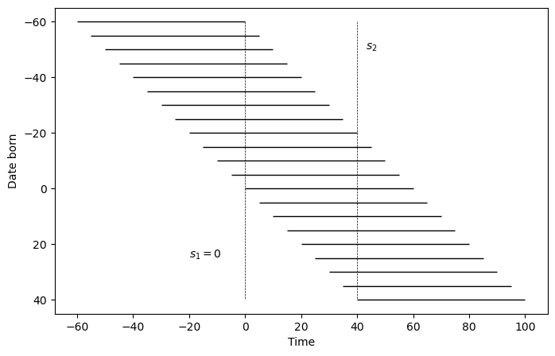
Fig. 83.1 Age-time diagram for overlapping generations#
83.2.9.1. Small open economy#
With fixed factor prices, the transition has a clear structure:
Cohorts born before \(s_1 - T_0\) die before the policy change and are unaffected.
Cohorts alive at \(s_1\) must recalculate their consumption-saving plans for their remaining lifetimes.
Cohorts born between \(s_1\) and \(s_2\) face time-varying tax and benefit rates, while those born after \(s_2\) face constant parameters.
The transition ends at \(s_3 = s_2 + T_0\) when the last cohort that experienced the policy change has died.
Because factor prices are fixed, we can compute the transition by solving decision rules for cohorts born at dates \(s_1 - T_0 - 1, \ldots, s_2\).
For any date \(s\), aggregate consumption is computed by summing across all living cohorts (along a vertical line in the age-time diagram), weighted by their population fractions.
83.2.9.2. Closed economy#
With endogenous factor prices, the transition is more complex:
Factor prices continue to evolve after policy parameters stabilize at \(s_2\), so we follow Auerbach and Kotlikoff [1987] and truncate at \(s_3 = s_2 + 2T_0\).
The computation requires nested iteration: an inner loop determines labor income tax rates, and an outer loop adjusts interest rates to clear factor markets.
Changes in saving behavior affect capital accumulation, which alters marginal products and feeds back into household decisions.
Lower interest rates benefit young workers through higher wages but hurt retirees through lower returns on savings.
83.3. Two experiments#
We explore two strategies for transitioning to a fully funded social security system.
In experiment 1, the government terminates social security benefits but compensates entitled generations through a one-time increase in government debt.
In experiment 2, the government retains social security benefits but temporarily raises taxes to accumulate physical capital, the returns from which eventually finance social security payments.
Both proposals finance a transition to fully funded social security while maintaining welfare across generations, but they entail different amounts of intergenerational risk-sharing.
We compute both experiments under fixed and endogenous factor prices and compare outcomes below.
83.4. Computation strategy#
83.4.1. Dynamic program#
An individual consumer’s problem can be formulated as a discounted risk-sensitive linear control problem (see LQ Control: Foundations).
Let \(x_t = [a_{t-1}, z_t]'\) where \(z_t\) is the vector of shocks.
The optimal value function takes the form \(U_t = x'_t \cdot P_t \cdot x_t + \xi_t\).
The recursive problem is
subject to \(x_{t+1} = A_t x_t + B_t u_t + C_t w_{t+1}\).
We deploy two operators
that we use to construct a value function recursion \(P_t = (D_t \circ T_t) P_{t+1}\), \(\xi_t = \mathcal{S}_t(\xi_{t+1}, P_{t+1})\), and an optimal control
Operators \(T_t\), \(D_t\), \(\mathcal{S}_t\) and decision rule \(F_t\) are constructed in solve_riccati_step.
Given value function parameters \((P_{t+1}, \xi_{t+1})\) at the next age, it constructs the state-space matrix \(A_t\), applies the cross-product trick, evaluates the Riccati operators, and returns the optimal decision rule \(F_t\), the closed-loop matrix \(A^o_t = A_t - B F_t\), and the updated \((P_t, \xi_t)\)
def solve_riccati_step(
ε_t, β_t, Ind_work_t,
RR, w, τ_l, τ_a, τ_0, benef,
P_next, ξ_next,
ρ_d, σ, B, C, R, Q, H):
"""One backward step of the risk-sensitive Riccati recursion."""
A = jnp.array([
[RR * (1.0 - τ_a) + τ_a,
(1.0 - τ_l) * w * ε_t
- τ_0 + benef * (1.0 - Ind_work_t),
(1.0 - τ_l) * Ind_work_t],
[0.0, 1.0, 0.0],
[0.0, 0.0, ρ_d]
])
Q_scalar = Q[0, 0]
Q_inv_scalar = 1.0 / Q_scalar
Q_inv = jnp.array([[Q_inv_scalar]])
# Cross-product trick: A* = A - B Q^{-1} H
A = A - B @ Q_inv @ H
# T_t operator
CTP = C.T @ P_next @ C
PP_scalar = 1.0 - σ * CTP[0, 0]
PP_inv_scalar = 1.0 / PP_scalar
PC = P_next @ C
CP = C.T @ P_next
TP = P_next + σ * PP_inv_scalar * (PC @ CP)
# D_t operator and decision rule F_t
BTB_scalar = (B.T @ TP @ B)[0, 0]
Q_BTB_scalar = Q_scalar + β_t * BTB_scalar
Q_BTB_inv_scalar = 1.0 / Q_BTB_scalar
BT_TP = B.T @ TP
BT_TP_A = BT_TP @ A
F = β_t * Q_BTB_inv_scalar * BT_TP_A
TP_B = TP @ B
middle = (β_t * TP
- β_t**2 * Q_BTB_inv_scalar
* (TP_B @ BT_TP))
P = R + A.T @ middle @ A
# S_t operator
log_det_PP = jnp.log(PP_scalar)
ξ = jnp.where(
σ != 0.0,
β_t * (ξ_next - log_det_PP / σ),
β_t * (ξ_next + CTP[0, 0])
)
Ao = A - B @ F
F = F + Q_inv @ H
return F.squeeze(), Ao, P, ξ
83.4.2. State space preparation#
The budget constraint (83.1) and the income process can be written in state-space form.
Let \(x_t = [a_{t-1}(s-1),\ 1,\ d_t]'\), \(u_t = c_t(s)\), and \(w_{t+1} = \epsilon_{t+1}\), so that
where
and \(\mathbf{1}^{\text{work}}_t\) indicates whether the agent is of working age.
The per-period return \(-\tfrac{1}{2}(\pi c_t - \gamma)^2\) introduces a cross-product term \(H\) between the control and the state.
This is eliminated using the cross-product trick (see Eliminating Cross Products):
83.4.3. Means and covariances#
Define \(A_o = A - BF\) as the closed-loop transition matrix, so that \(x_{t+1} = A_o x_t + C w_{t+1}\) and unconditional moments satisfy
The moment recursion is implemented as forward_moment_step, which propagates the mean vector and covariance matrix by one age step and computes consumption statistics as by-products.
def forward_moment_step(μx_t, Σx_t, Ao_t, F_t, CCT):
"""One step of the forward moment recursion."""
μx_next = Ao_t @ μx_t
μc_t = -F_t @ μx_t
Σx_next = CCT + Ao_t @ Σx_t @ Ao_t.T
Vc_t = F_t @ Σx_t @ F_t.T
return μx_next, μc_t, Σx_next, Vc_t
83.4.4. Computing transitions#
A cohort born at \(s\) lives during \(s, s+1, \ldots, s+T_0\) and works during \(s, s+1, \ldots, s+T_1\).
Let \(0 \leq s_1 < s_2 < s_3\).
At \(s = 0\), the government announces a policy change between \(s = s_1\) and \(s = s_2\).
From \(s = s_2\), government policies are constant forever.
From \(s = s_3\), convergence to the final stationary equilibrium is achieved (in the small open economy, \(s_3 = s_2 + T_0\)).
The affected cohorts are those born at \(s = s_1 - T_0, s_1 - T_0 + 1, \ldots, s_2\).
In all exercises, we set \(T_0 = 65\), \(T_1 = 43\), \(s_1 = 0\), and \(s_2 = 40\).
83.5. Calibration#
The model parameters are set as follows.
83.5.1. Preference parameters#
Parameter |
Description |
Value |
|---|---|---|
\(\{\alpha_t\}_{t=0}^{T_0}\) |
Age-to-age survival probabilities |
Faber [1982] |
\(\pi\) |
Consumption preference parameter |
1.0 |
\(\sigma\) |
Risk-sensitivity parameter |
\(-0.05\) |
\(\bar{\gamma}\) |
Preference shock parameter |
7.0 |
\(\tilde{\beta}\) |
Discount factor |
0.986 |
\(T_0\) |
Maximum age |
65 |
\(T_1\) |
Retirement age |
43 |
\(n\) |
Gross population growth rate |
1.012 |
83.5.2. Technology parameters#
Parameter |
Description |
Value |
|---|---|---|
\(k_{-1}\) |
Initial capital endowment |
4.0 |
\(\sigma_d\) |
Standard deviation of income shock |
0.85 |
\(\rho_d\) |
Persistence of income shock |
0.8 |
\(\delta\) |
Depreciation rate |
0.06 |
\(\{\varepsilon_t\}_{t=0}^{T_1}\) |
Age-efficiency profile |
Hansen [1993] |
\(w\) |
Base wage rate (exogenous) |
5.0147 |
\(r\) |
Return on capital (exogenous) |
0.1275 |
\(\tilde{A}\) |
Production function scaling (endogenous) |
2.2625 |
\(\tilde{\alpha}\) |
Capital share (endogenous) |
0.40 |
N_GRID_SS = 10
TOL_SS = 1e-10
T0 = 65 # maximum lifespan (ages 21 to 86)
T1 = 43 # working life length (retire at 65)
UNIT_GRID = jnp.linspace(0.0, 1.0, N_GRID_SS)
AGE_INDICES = jnp.arange(T0 + 2)
The hidden code cell below defines the age-efficiency profile \(\{\varepsilon_t\}\) and the survival probabilities \(\{\alpha_t\}\) based on Faber [1982] and Hansen [1993].
fig, axs = plt.subplots(1, 2, figsize=(10, 6))
axs[0].plot(ε_arr)
axs[0].set_title("Working efficiency")
axs[0].set_xlabel("Age")
axs[1].plot(α_arr)
axs[1].set_title("Survival probability")
axs[1].set_xlabel("Age")
plt.tight_layout()
plt.show()
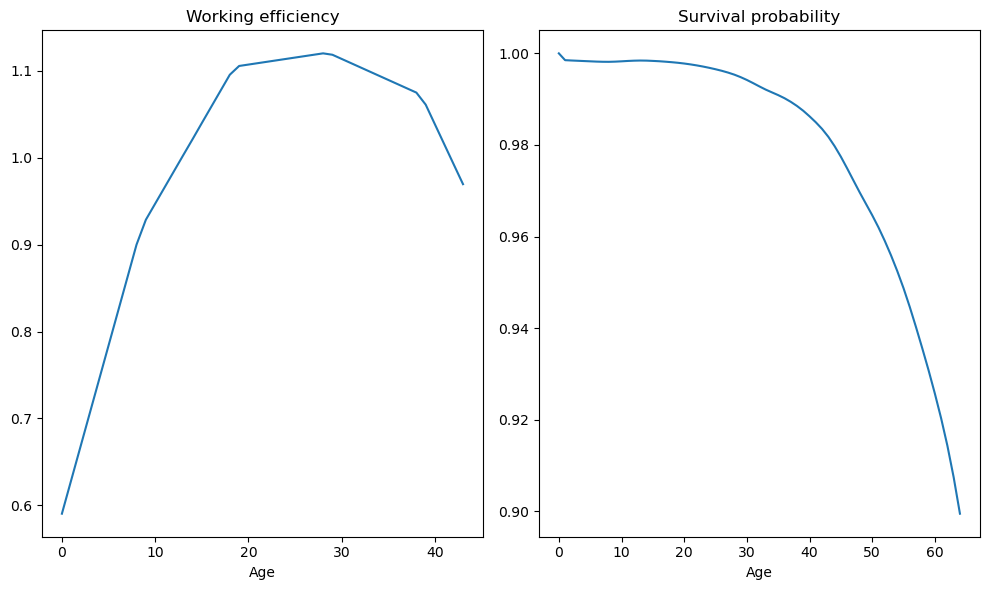
Fig. 83.2 Age-efficiency profile and survival probabilities#
We impose a large penalty on terminal asset holdings to enforce the end-of-life condition, and set the initial state to \(x_0 = [k_{-1},\ 1,\ 0]'\).
P_end = jnp.zeros((3, 3))
P_end = P_end.at[0, 0].set(-2000000.0)
ξ_end = 0.0
x0 = jnp.array([4.0, 1.0, 0.0])
Σ0 = jnp.zeros((3, 3))
All household parameters are collected into a named tuple.
Household = namedtuple('Household', (
'α_arr', 'frac', 'n', 'π', 'σ', 'k_init', 'ε_arr', 'Ind_work',
'σ_d', 'ρ_d', 'γ_bar', 'β_arr',
'T0', 'T1', 'T2', 'n_x', 'n_w',
'P_end', 'ξ_end', 'x0', 'Σ0',
'B', 'C', 'R', 'Q', 'H'
))
def create_household(α_arr=α_arr, # Age-to-age survival probabilities
n=1.012, # Gross population growth rate
π=1, # Consumption preference parameter
σ=-0.05, # Risk-sensitivity parameter
k_init=4, # initial capital endowment
ε_arr=ε_arr, # age-efficiency profile
σ_d=0.85, # std of income shock
ρ_d=0.8, # persistence of income shock
γ_bar=7, # Preference shock parameter
β_tilde=0.986, # Discount factor
T0=65, # Maximum age
T1=43, # Retirement age
n_x=3, # Number of states
n_w=1, # Number of shocks
P_end=P_end, # Terminal value
ξ_end=ξ_end, # Terminal value
x0=x0, # Initial mean
Σ0=Σ0): # Initial variance
"""Create a Household named tuple with derived arrays."""
α_arr = np.concatenate([α_arr, np.array([0])])
T2 = T0 - T1
frac = np.ones(T0 + 1)
frac[1:] = np.cumprod(α_arr / n)[:-1]
frac = frac / frac.sum()
ε_arr = np.concatenate([ε_arr, np.zeros(T0 + 1 - ε_arr.size)])
# Indicator for working ages: 1 if working (ε > 0), 0 if retired
Ind_work = (ε_arr != 0).astype(np.float64)
β_arr = β_tilde * α_arr
β_arr[-1] = β_tilde
B = jnp.array([[-1.0, 0.0, 0.0]]).T
C = jnp.array([[0.0, 0.0, σ_d]]).T
Q = jnp.array([[-0.5 * π**2]])
H = jnp.array([[0.0, 0.5 * π * γ_bar, 0.0]])
# Apply cross-product trick: R* = R - H'Q^{-1}H
R_base = np.array([[0.0, 0.0, 0.0],
[0.0, -0.5 * γ_bar**2, 0.0],
[0.0, 0.0, 0.0]])
H_np = np.array([[0.0, 0.5 * π * γ_bar, 0.0]])
Q_inv_np = np.array([[1.0 / (-0.5 * π**2)]])
R = jnp.array(R_base - H_np.T @ Q_inv_np @ H_np)
return Household(
α_arr=jnp.array(α_arr), frac=jnp.array(frac), n=n, π=π, σ=σ,
k_init=k_init, ε_arr=jnp.array(ε_arr), Ind_work=jnp.array(Ind_work),
σ_d=σ_d, ρ_d=ρ_d, γ_bar=γ_bar, β_arr=jnp.array(β_arr),
T0=T0, T1=T1, T2=T2, n_x=n_x, n_w=n_w,
P_end=P_end, ξ_end=ξ_end, x0=x0, Σ0=Σ0,
B=B, C=C, R=R, Q=Q, H=H
)
hh = create_household()
The stationary population distribution follows.
fig, ax = plt.subplots()
ax.plot(hh.frac)
ax.set_xlabel("Age")
ax.set_ylabel("Population fraction")
ax.set_title("Population distribution over age")
plt.show()
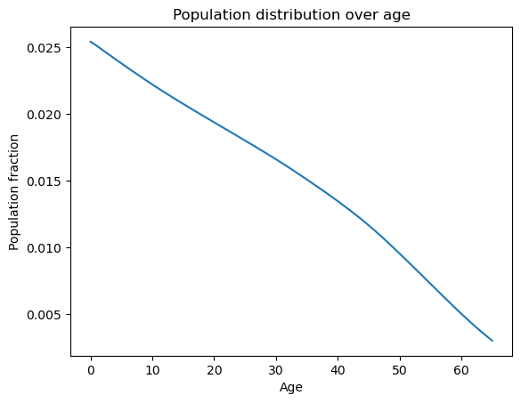
Fig. 83.3 Stationary population distribution over age#
Mortality causes the population fraction to decline with age, a demographic pattern central to the intergenerational redistribution that social security reform entails.
Under the small open economy assumption, factor prices are fixed at calibrated values; under the closed economy assumption, they are determined by Cobb-Douglas marginal products
Tech = namedtuple('Tech', ('δ', 'w', 'r', 'RR', 'A', 'α_tilde'))
def create_Tech(δ=0.06, w=5.0147, r=0.1275,
A=2.2625, α_tilde=0.40):
"""Create a Tech named tuple with factor price parameters."""
RR = 1 + r - δ
return Tech(δ=δ, w=w, r=r, RR=RR, A=A, α_tilde=α_tilde)
tech = create_Tech()
83.6. Individual optimality#
83.6.1. Steady-state computation#
With solve_riccati_step and forward_moment_step in hand, the steady-state computation proceeds in three phases.
Algorithm 83.1 (Steady-state computation)
Backward recursion: scan from age \(T_0\) down to \(0\). At each age \(t\), call
solve_riccati_stepto obtain decision rule \(F_t\), closed-loop matrix \(A^o_t\), value-function matrix \(P_t\), and certainty-equivalent \(\xi_t\).Forward simulation: scan from age \(0\) up to \(T_0\). At each age \(t\), call
forward_moment_stepto propagate mean \(\mu_{x,t}\) and covariance \(\Sigma_{x,t}\) of the state vector, and record mean consumption \(\mu_{c,t}\) and its variance \(V_{c,t}\).Budget imbalance: aggregate across cohorts. Sum tax revenues (labor, capital, lump-sum), subtract benefit payments, add accidental bequests, and return the government budget gap.
Phase 1. The backward recursion scans from age \(T_0\) to \(0\), applying solve_riccati_step at each age
def _ss_backward_recursion(
ε_arr, β_arr, Ind_work,
RR, w, τ_l, τ_a, τ_0, benef,
P_end, ξ_end,
ρ_d, σ, B, C, R, Q, H):
"""Backward Riccati scan over all ages."""
ε_rev = ε_arr[::-1]
β_rev = β_arr[::-1]
Ind_work_rev = Ind_work[::-1]
def backward_step(carry, inputs):
P_next, ξ_next = carry
ε_t, β_t, Ind_work_t = inputs
F, Ao, P, ξ = solve_riccati_step(
ε_t, β_t, Ind_work_t,
RR, w, τ_l, τ_a, τ_0, benef,
P_next, ξ_next,
ρ_d, σ, B, C, R, Q, H
)
return (P, ξ), (F, Ao, P, ξ)
init_carry = (P_end, ξ_end)
_, (F_rev, Ao_rev, P_rev, ξ_rev) = lax.scan(
backward_step, init_carry,
(ε_rev, β_rev, Ind_work_rev)
)
F_arr = F_rev[::-1]
Ao_arr = Ao_rev[::-1]
P_inner = P_rev[::-1]
ξ_inner = ξ_rev[::-1]
P_arr = jnp.concatenate(
[P_inner, P_end[None, :, :]], axis=0
)
ξ_arr = jnp.concatenate(
[ξ_inner, jnp.array([ξ_end])]
)
return F_arr, Ao_arr, P_arr, ξ_arr
Phase 2. The forward recursion propagates means and covariances from age \(0\) to \(T_0\)
def _ss_forward_simulation(
Ao_arr, F_arr, x0, Σ0, C):
"""Forward moment scan using forward_moment_step."""
CCT = C @ C.T
def forward_step(carry, inputs):
μx_t, Σx_t = carry
Ao_t, F_t = inputs
result = forward_moment_step(
μx_t, Σx_t, Ao_t, F_t, CCT
)
μx_next, μc_t, Σx_next, Vc_t = result
return (μx_next, Σx_next), \
(μx_next, μc_t, Σx_next, Vc_t)
init_carry = (x0, Σ0)
_, (μx_scn, μc_arr, Σx_scn, Vc_arr) = lax.scan(
forward_step, init_carry, (Ao_arr, F_arr)
)
μx_arr = jnp.concatenate(
[x0[None, :], μx_scn], axis=0
)
Σx_arr = jnp.concatenate(
[Σ0[None, :, :], Σx_scn], axis=0
)
return μx_arr, μc_arr, Σx_arr, Vc_arr
Phase 3. Aggregating tax revenues, benefit payments, and accidental bequests across cohorts gives the government budget gap
def _ss_budget_imbalance(
μx_arr, ε_arr, frac, n, α_arr,
RR, w, τ_l, τ_a, τ_0, benef,
G, Gb, Ind_work):
"""Aggregate tax revenues and expenditures."""
μa_arr = μx_arr[1:, 0]
μa_last_arr = μx_arr[:-1, 0]
τ_l_tot = jnp.sum(τ_l * ε_arr * w * frac)
τ_a_tot = jnp.sum(
τ_a * (RR - 1.0) * μa_last_arr * frac
)
τ_0_tot = jnp.sum(τ_0 * frac)
retired_mask = 1.0 - Ind_work
benef_tot = jnp.sum(benef * frac * retired_mask)
Beq = jnp.sum(
RR * (1.0 - α_arr) * frac * μa_arr / n
)
T_tot = τ_l_tot + τ_a_tot + τ_0_tot + Beq
diff = (G + benef_tot - T_tot
+ (RR / n - 1.0) * Gb)
return diff
A steady state is found when the budget gap equals zero.
ss_imbalance chains the three phases into a single JIT-compiled function: backward recursion, forward simulation, and budget gap
@jit
def ss_imbalance(price, policy, α_arr, ε_arr, frac,
n, β_arr, ρ_d, σ, B, C, R, Q, H,
P_end, ξ_end, x0, Σ0, Ind_work):
"""Backward solve, forward simulate, and return budget gap."""
RR, w = price
τ_l, τ_a, τ_0, benef, G, Gb = policy
F_arr, Ao_arr, P_arr, ξ_arr = \
_ss_backward_recursion(
ε_arr, β_arr, Ind_work,
RR, w, τ_l, τ_a, τ_0, benef,
P_end, ξ_end,
ρ_d, σ, B, C, R, Q, H
)
μx_arr, μc_arr, Σx_arr, Vc_arr = \
_ss_forward_simulation(
Ao_arr, F_arr, x0, Σ0, C
)
diff = _ss_budget_imbalance(
μx_arr, ε_arr, frac, n, α_arr,
RR, w, τ_l, τ_a, τ_0, benef,
G, Gb, Ind_work
)
return (diff, P_arr, ξ_arr, Ao_arr, F_arr,
μx_arr, μc_arr, Σx_arr, Vc_arr)
A named tuple SteadyState collects value-function parameters, decision rules, moments, and aggregate statistics into a single object that the transition solver can unpack
SteadyState = namedtuple("SteadyState", (
"P_arr", # Value function matrices by age
"ξ_arr", # Certainty equivalent adjustments by age
"Ao_arr", # Closed-loop transition matrices by age
"F_arr", # Decision rule matrices by age
"μx_arr", # Mean state vectors by age
"μc_arr", # Mean consumption by age
"Σx_arr", # Covariance matrices by age
"Vc_arr", # Consumption variances by age
"debt2gdp", # Government debt to GDP ratio
"τ_l", # Labor income tax rate
"benef", # Social security benefit level
"Gb", # Per-capita government debt
"k_bar", # Per-capita capital stock
"RR", # Gross return on assets
"w", # Wage rate
"r", # Interest rate (before depreciation)
"k2gdp" # Capital to GDP ratio
))
Given all other fiscal instruments, the equilibrium \(\tau_\ell\) is the value that zeroes the budget gap.
We find it by iterative grid refinement: evaluate the gap on a coarse grid, zoom into the best interval, and repeat
def _grid_refine(eval_fn, a_init, b_init, unit_grid, tol, max_iter):
"""Iterative grid-refinement root search.
Must be called inside @jit functions.
"""
n_grid = unit_grid.shape[0]
def cond_fn(state):
a, b, best_val, i = state
return (jnp.abs(best_val) > tol) & (i < max_iter)
def body_fn(state):
a, b, _, i = state
grid = a + (b - a) * unit_grid
diffs = vmap(eval_fn)(grid)
best_idx = jnp.argmin(jnp.abs(diffs))
best_val = diffs[best_idx]
idx_lo = jnp.maximum(best_idx - 1, 0)
idx_hi = jnp.minimum(best_idx + 1, n_grid - 1)
return (grid[idx_lo], grid[idx_hi], best_val, i + 1)
grid = a_init + (b_init - a_init) * unit_grid
diffs = vmap(eval_fn)(grid)
best_idx = jnp.argmin(jnp.abs(diffs))
best_val = diffs[best_idx]
idx_lo = jnp.maximum(best_idx - 1, 0)
idx_hi = jnp.minimum(best_idx + 1, n_grid - 1)
init_state = (grid[idx_lo], grid[idx_hi], best_val, 0)
final_state = lax.while_loop(cond_fn, body_fn, init_state)
a_final, b_final, _, _ = final_state
return (a_final + b_final) / 2.0
_ss_diff_for_tau_l evaluates the budget gap at a given \(\tau_\ell\), and _find_ss_tau_l wraps it inside the grid-refine loop.
def _ss_diff_for_tau_l(τ_l, price_arr, policy_no_τl, α_arr, ε_arr, frac, n,
β_arr, ρ_d, σ, B, C, R, Q, H, P_end, ξ_end, x0, Σ0,
Ind_work):
"""Budget imbalance for a given τ_l."""
τ_a, τ_0, benef, G, Gb = policy_no_τl
policy_arr = jnp.array([τ_l, τ_a, τ_0, benef, G, Gb])
diff, *_ = ss_imbalance(
price_arr, policy_arr,
α_arr, ε_arr, frac, n,
β_arr, ρ_d, σ, B, C, R, Q, H, P_end, ξ_end, x0, Σ0,
Ind_work
)
return diff
@jit
def _find_ss_tau_l(price_arr, policy_no_τl, α_arr, ε_arr, frac, n,
β_arr, ρ_d, σ, B, C, R, Q, H, P_end, ξ_end, x0, Σ0,
Ind_work, unit_grid):
"""Find τ_l that balances the steady-state budget."""
def compute_diff(τ_l):
return _ss_diff_for_tau_l(
τ_l, price_arr, policy_no_τl, α_arr, ε_arr, frac, n,
β_arr, ρ_d, σ, B, C, R, Q, H, P_end, ξ_end, x0, Σ0,
Ind_work
)
return _grid_refine(compute_diff, -0.5, 1.0 - 1e-5, unit_grid, TOL_SS, 10)
GDP is the sum of capital and labor income shares
def _compute_gdp(μa_arr, frac, ε_arr, Gb, r, w, n, x0_0, frac_0):
"""Compute GDP from aggregates."""
ε_agg = jnp.sum(frac * ε_arr)
a_agg = jnp.sum(frac * μa_arr)
k_agg = a_agg - Gb
k_share = r * (k_agg / n + frac_0 * x0_0)
l_share = w * ε_agg
return k_agg, k_share + l_share
find_ss_exo ties the pieces together: it solves for \(\tau_\ell\), evaluates the full steady state, and returns a SteadyState named tuple
def find_ss_exo(price, policy_target, hh, tech):
"""Find steady state with exogenous prices by solving for τ_l."""
frac, ε_arr, n, x0 = hh.frac, hh.ε_arr, hh.n, hh.x0
RR, w = price
r = RR - 1 + tech.δ
τ_a, τ_0, benef, G, Gb = policy_target
price_arr = jnp.array([RR, w])
policy_no_τl = jnp.array([τ_a, τ_0, benef, G, Gb])
τ_l = _find_ss_tau_l(
price_arr, policy_no_τl,
hh.α_arr, hh.ε_arr, hh.frac, hh.n,
hh.β_arr, hh.ρ_d, hh.σ, hh.B, hh.C, hh.R, hh.Q, hh.H,
hh.P_end, hh.ξ_end, hh.x0, hh.Σ0,
hh.Ind_work, UNIT_GRID
)
price_arr = jnp.array([RR, w])
policy_arr = jnp.array([float(τ_l), τ_a, τ_0, benef, G, Gb])
diff, P_arr, ξ_arr, Ao_arr, F_arr, μx_arr, μc_arr, Σx_arr, Vc_arr = \
ss_imbalance(
price_arr, policy_arr,
hh.α_arr, hh.ε_arr, hh.frac, hh.n,
hh.β_arr, hh.ρ_d, hh.σ,
hh.B, hh.C, hh.R, hh.Q, hh.H,
hh.P_end, hh.ξ_end, hh.x0, hh.Σ0,
hh.Ind_work
)
k_agg, gdp = _compute_gdp(
μx_arr[1:, 0], frac, ε_arr,
Gb, r, w, n, x0[0], frac[0]
)
debt2gdp = Gb / gdp
k2gdp = k_agg / gdp
return SteadyState(
P_arr=P_arr, ξ_arr=ξ_arr, Ao_arr=Ao_arr, F_arr=F_arr,
μx_arr=μx_arr, μc_arr=μc_arr, Σx_arr=Σx_arr, Vc_arr=Vc_arr,
debt2gdp=float(debt2gdp), τ_l=float(τ_l), benef=benef, Gb=Gb,
k_bar=float(k_agg), RR=RR, w=w, r=float(r), k2gdp=float(k2gdp)
)
The initial fiscal policy sets a social security replacement rate of \(\theta = 0.6\)
aveinc = tech.w * sum(hh.ε_arr) / (hh.T1 + 1)
θ = 0.6
benef_0 = aveinc * θ
G_0 = 1.44 # government purchases
Gb_0 = 2.8 * G_0 # government debt
τ_l_0 = 0.3385 # labor income tax
τ_a_0 = 0.30 # capital income tax
τ_0_0 = 0 # lump-sum tax
RR, w = tech.RR, tech.w
83.6.2. Initial and terminal steady states#
The initial steady state features a calibrated replacement rate (\(\theta = 0.6\)), positive social security benefits, and government expenditure and debt set to match targets.
The transition dates are \(s_1 = 0\) and \(s_2 = 40\), with horizons \(S = 140\) (exogenous prices) and \(S = 200\) (endogenous prices).
S_exo = 140
S_endo = 200
S1, S2 = 0, 40
S3 = S2 + 2 * hh.T0
RR_exo, w_exo = tech.RR, tech.w
Two helper functions build the price and policy arrays that the transition solver expects.
Under the small open economy assumption, prices are constant over time.
def make_exo_price_seq(S, RR, w):
"""Construct constant price sequence for small open economy."""
return jnp.column_stack([jnp.full(S + 2, RR), jnp.full(S + 2, w)])
The policy sequence sets \(\tau_\ell\) to the initial steady-state value before \(s_1\) and to the terminal value after \(s_2\), while holding all other fiscal instruments constant.
def make_policy_seq(S, ss0_τl, ss1_τl, S1, S2, τ_a, τ_0, benef, G, Gb):
"""Construct policy sequence with initial/terminal
τ_l and constant other policies."""
policy_seq = jnp.empty((S + 2, 6))
policy_seq = policy_seq.at[:S1 + 1, 0].set(ss0_τl)
policy_seq = policy_seq.at[S2 + 1:, 0].set(ss1_τl)
policy_seq = policy_seq.at[:, 1].set(τ_a)
policy_seq = policy_seq.at[:, 2].set(τ_0)
policy_seq = policy_seq.at[:, 3].set(benef)
policy_seq = policy_seq.at[:, 4].set(G)
policy_seq = policy_seq.at[:, 5].set(Gb)
return policy_seq
ss0 = find_ss_exo((RR, w), (τ_a_0, τ_0_0, benef_0, G_0, Gb_0), hh, tech)
print(f"Initial Steady State (s < 0):")
print(f" Labor tax τ_l = {ss0.τ_l:.4f}")
print(f" Interest rate r - δ = {ss0.r - tech.δ:.4f}")
print(f" Capital/GDP = {ss0.k2gdp:.4f}")
print(f" Debt/GDP = {ss0.debt2gdp:.4f}")
Initial Steady State (s < 0):
Labor tax τ_l = 0.3383
Interest rate r - δ = 0.0675
Capital/GDP = 3.1615
Debt/GDP = 0.5899
The following figure traces how the equilibrium labor tax rate varies with government debt in the terminal steady state (no social security)
Gb_arr = np.linspace(0.5 * Gb_0, 1.5 * Gb_0, 20)
τl_arr = np.empty_like(Gb_arr)
debt2gdp_arr = np.empty_like(Gb_arr)
for i, Gb in enumerate(Gb_arr):
ss = find_ss_exo((RR, w), (τ_a_0, τ_0_0, 0, G_0, Gb), hh, tech)
τl_arr[i] = ss.τ_l
debt2gdp_arr[i] = ss.debt2gdp
fig, ax = plt.subplots()
ax.plot(τl_arr, debt2gdp_arr)
ax.hlines(ss0.debt2gdp, τl_arr.min(),
np.maximum(τl_arr.max(), ss0.τ_l), linestyle='--', color='r')
ax.scatter(ss0.τ_l, ss0.debt2gdp)
ax.text(ss0.τ_l * 0.95, ss0.debt2gdp * 0.95, "ss0")
ax.text(0.07, 0.4, r"ss1($G_b$)")
ax.set_xlabel(r'$\tau_\ell$')
ax.set_ylabel('Debt/GDP')
plt.show()
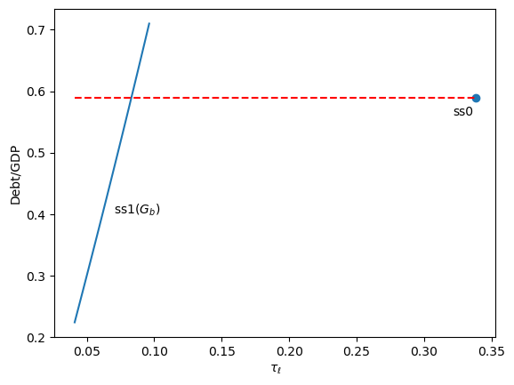
Fig. 83.4 Debt-to-GDP ratio as a function of the labor tax rate#
Higher government debt requires larger interest payments, so the equilibrium labor tax rises.
The marked point shows the initial steady state.
To set the terminal steady state, we need to invert this relationship: given a target debt-to-GDP ratio, find the debt level \(\bar{b}\) and the associated \(\tau_\ell\).
def _compute_debt2gdp_for_Gb(
Gb, price_arr, policy_no_Gb,
α_arr, ε_arr, frac, n,
β_arr, ρ_d, σ, B, C, R, Q, H,
P_end, ξ_end, x0, Σ0,
δ, Ind_work, unit_grid):
"""Compute debt-to-GDP ratio for a given Gb."""
RR, w = price_arr
τ_a, τ_0, benef, G = policy_no_Gb
r = RR - 1 + δ
policy_no_τl = jnp.array([τ_a, τ_0, benef, G, Gb])
# Reuse _find_ss_tau_l instead of duplicating grid search
τ_l = _find_ss_tau_l(
price_arr, policy_no_τl, α_arr, ε_arr, frac, n,
β_arr, ρ_d, σ, B, C, R, Q, H, P_end, ξ_end, x0, Σ0,
Ind_work, unit_grid
)
policy_arr = jnp.array([τ_l, τ_a, τ_0, benef, G, Gb])
_, _, _, _, _, μx_arr, _, _, _ = ss_imbalance(
price_arr, policy_arr,
α_arr, ε_arr, frac, n,
β_arr, ρ_d, σ, B, C, R, Q, H, P_end, ξ_end, x0, Σ0,
Ind_work
)
_, gdp = _compute_gdp(
μx_arr[1:, 0], frac, ε_arr,
Gb, r, w, n, x0[0], frac[0]
)
return Gb / gdp
_find_Gb_for_debt2gdp searches over \(\bar{b}\) values via grid refinement to match a target debt-to-GDP ratio.
@jit
def _find_Gb_for_debt2gdp(
debt2gdp_target, price_arr, policy_no_Gb,
α_arr, ε_arr, frac, n,
β_arr, ρ_d, σ, B, C, R, Q, H,
P_end, ξ_end, x0, Σ0,
δ, Ind_work, unit_grid, unit_grid_tau):
"""Find Gb consistent with a target debt-to-GDP ratio."""
RR, w = price_arr
τ_a, τ_0, benef, G = policy_no_Gb
def compute_diff_coarse(Gb):
debt2gdp = _compute_debt2gdp_for_Gb(
Gb, price_arr, policy_no_Gb, α_arr, ε_arr, frac, n,
β_arr, ρ_d, σ, B, C, R, Q, H, P_end, ξ_end, x0, Σ0,
δ, Ind_work, unit_grid_tau
)
return debt2gdp - debt2gdp_target
return _grid_refine(compute_diff_coarse, -40.0, 20.0, unit_grid, TOL_SS, 5)
ss_target_debt2gdp_exo finds the debt level consistent with the target ratio, then computes the full steady state.
def ss_target_debt2gdp_exo(debt2gdp_target, policy_target, price, hh, tech):
"""Find steady state with target debt-to-GDP ratio."""
τ_a, τ_0, benef, G = policy_target
RR, w = price
price_arr = jnp.array([RR, w])
policy_no_Gb = jnp.array([τ_a, τ_0, benef, G])
Gb = _find_Gb_for_debt2gdp(
float(debt2gdp_target), price_arr, policy_no_Gb,
hh.α_arr, hh.ε_arr, hh.frac, hh.n,
hh.β_arr, hh.ρ_d, hh.σ, hh.B, hh.C, hh.R, hh.Q, hh.H,
hh.P_end, hh.ξ_end, hh.x0, hh.Σ0, tech.δ,
hh.Ind_work, UNIT_GRID, UNIT_GRID
)
return find_ss_exo((RR, w), (τ_a, τ_0, benef, G, float(Gb)), hh, tech)
The terminal steady state eliminates social security (\(\theta = 0\)) while matching the initial debt-to-GDP ratio
ss1 = ss_target_debt2gdp_exo(
ss0.debt2gdp, (τ_a_0, τ_0_0, 0, G_0), (RR_exo, w_exo), hh, tech
)
print(f"\nTerminal Steady State (s >= s3):")
print(f" Labor tax τ_l = {ss1.τ_l:.4f}")
print(f" Benefits θ = 0")
print(f" Capital/GDP = {ss1.k2gdp:.4f}")
print(f" Debt/GDP = {ss1.debt2gdp:.4f}")
Terminal Steady State (s >= s3):
Labor tax τ_l = 0.0831
Benefits θ = 0
Capital/GDP = 4.1567
Debt/GDP = 0.5901
83.7. Transition path computation#
The transition path describes how the economy moves from the initial steady state (with social security) to the terminal steady state (after reform).
This is more complex than the steady-state computation because prices and policies change over time, so each cohort faces a unique lifetime sequence of tax and benefit rates.
solve_backwards solves the household problem backward in time during the transition, computing optimal decision rules \(F_t(s)\) and closed-loop transition matrices \(A^o_t(s)\) at each calendar date \(s\) and age \(t\).
@jit
def solve_backwards(
price_seq, policy_seq,
P_arr_ss1, ξ_arr_ss1,
ε_arr, β_arr, Ind_work,
ρ_d, σ, B, C, R, Q, H,
P_end, ξ_end,
s_indices, ages):
"""Backward Riccati scan over all dates and ages."""
# Infer dimensions from input arrays
n_x = P_end.shape[0]
S = s_indices.shape[0] - 1
def solve_all_ages(P_next_all, ξ_next_all, RR_s, w_s, τ_l, τ_a, τ_0, benef):
def solve_one_age(t, P_next, ξ_next):
ε_t = ε_arr[t]
β_t = β_arr[t]
Ind_work_t = Ind_work[t]
F, Ao, P, ξ = solve_riccati_step(
ε_t, β_t, Ind_work_t, RR_s, w_s, τ_l, τ_a, τ_0, benef,
P_next, ξ_next, ρ_d, σ, B, C, R, Q, H
)
return F, Ao, P, ξ
P_next_shifted = P_next_all[1:]
ξ_next_shifted = ξ_next_all[1:]
F_all, Ao_all, P_all, ξ_all = vmap(
solve_one_age
)(ages, P_next_shifted, ξ_next_shifted)
return F_all, Ao_all, P_all, ξ_all
def scan_body(carry, s_inv):
P_next_seq, ξ_next_seq = carry
s = S - s_inv
RR_s = price_seq[s, 0]
w_s = price_seq[s, 1]
τ_l = policy_seq[s, 0]
τ_a = policy_seq[s, 1]
τ_0 = policy_seq[s, 2]
benef = policy_seq[s, 3]
F_s, Ao_s, P_s, ξ_s = solve_all_ages(
P_next_seq, ξ_next_seq, RR_s, w_s, τ_l, τ_a, τ_0, benef
)
# Build P_curr and ξ_curr using the known shapes from input arrays
P_curr = jnp.zeros_like(P_arr_ss1)
P_curr = P_curr.at[:T0+1].set(P_s)
P_curr = P_curr.at[-1].set(P_end)
ξ_curr = jnp.zeros_like(ξ_arr_ss1)
ξ_curr = ξ_curr.at[:T0+1].set(ξ_s)
ξ_curr = ξ_curr.at[-1].set(ξ_end)
output = (F_s, Ao_s, P_s, ξ_s)
new_carry = (P_curr, ξ_curr)
return new_carry, output
init_carry = (P_arr_ss1, ξ_arr_ss1)
# s_indices already has the right length
_, outputs = lax.scan(scan_body, init_carry, s_indices)
F_seq, Ao_seq, P_seq_inner, ξ_seq_inner = outputs
F_seq = jnp.flip(F_seq, axis=0)
Ao_seq = jnp.flip(Ao_seq, axis=0)
# Build output arrays using shapes from price_seq
P_seq = jnp.zeros((price_seq.shape[0], P_arr_ss1.shape[0], n_x, n_x))
ξ_seq = jnp.zeros((price_seq.shape[0], ξ_arr_ss1.shape[0]))
P_seq_inner = jnp.flip(P_seq_inner, axis=0)
ξ_seq_inner = jnp.flip(ξ_seq_inner, axis=0)
P_seq = P_seq.at[:S+1, :T0+1].set(P_seq_inner)
ξ_seq = ξ_seq.at[:S+1, :T0+1].set(ξ_seq_inner)
P_seq = P_seq.at[:, -1].set(P_end)
ξ_seq = ξ_seq.at[:, -1].set(ξ_end)
P_seq = P_seq.at[-1, :].set(P_arr_ss1)
ξ_seq = ξ_seq.at[-1, :].set(ξ_arr_ss1)
return F_seq, Ao_seq, P_seq, ξ_seq
simulate_forwards takes the computed decision rules and simulates the economy forward from the initial distribution, tracking the evolution of asset means and variances across cohorts through the transition.
@jit
def simulate_forwards(
Ao_seq, F_seq, μx_init, Σx_init,
C, x0, Σ0, s_indices, ages):
"""Forward moment scan over all dates and ages."""
# Infer dimensions from input arrays
n_x = x0.shape[0]
CCT = C @ C.T
S = s_indices.shape[0] - 1
def simulate_all_ages(μx_curr, Σx_curr, Ao_s, F_s):
def simulate_one_age(t, μx_t, Σx_t, Ao_t, F_t):
return forward_moment_step(
μx_t, Σx_t, Ao_t, F_t, CCT
)
μx_next_all, μc_all, Σx_next_all, Vc_all = vmap(simulate_one_age)(
ages, μx_curr[:T0+1], Σx_curr[:T0+1], Ao_s, F_s
)
return μx_next_all, μc_all, Σx_next_all, Vc_all
def scan_body(carry, s):
μx_curr, Σx_curr = carry
Ao_s = Ao_seq[s]
F_s = F_seq[s]
μx_next_inner, μc_s, Σx_next_inner, Vc_s = simulate_all_ages(
μx_curr, Σx_curr, Ao_s, F_s
)
# Use shapes from μx_init
μx_next = jnp.zeros_like(μx_init)
μx_next = μx_next.at[0].set(x0)
μx_next = μx_next.at[1:T0+2].set(μx_next_inner)
Σx_next = jnp.zeros_like(Σx_init)
Σx_next = Σx_next.at[0].set(Σ0)
Σx_next = Σx_next.at[1:T0+2].set(Σx_next_inner)
output = (μx_curr, μc_s, Σx_curr, Vc_s)
new_carry = (μx_next, Σx_next)
return new_carry, output
init_carry = (μx_init, Σx_init)
final_carry, outputs = lax.scan(scan_body, init_carry, s_indices)
μx_seq_inner, μc_seq, Σx_seq_inner, Vc_seq = outputs
# Build output arrays using inferred sizes
μx_seq = jnp.zeros((S + 2, T0 + 2, n_x))
Σx_seq = jnp.zeros((S + 2, T0 + 2, n_x, n_x))
μx_seq = μx_seq.at[:S+1].set(μx_seq_inner)
Σx_seq = Σx_seq.at[:S+1].set(Σx_seq_inner)
μx_seq = μx_seq.at[S+1].set(final_carry[0])
Σx_seq = Σx_seq.at[S+1].set(final_carry[1])
return μx_seq, μc_seq, Σx_seq, Vc_seq
Given a candidate transition tax rate \(\tau_\ell^{\text{trans}}\), the function transition_paths constructs the complete policy sequence, solves backward, simulates forward, computes the capital and debt paths by aggregating across cohorts, and returns the terminal debt carryover that we seek to drive to zero.
@jit
def _transition_paths(
τ_l_trans, price_seq, policy_seq,
ss1_P_arr, ss1_ξ_arr, ss1_Gb,
μx_init, Σx_init, k_bar_init,
s_indices, age_range, S1, S2,
ε_arr, β_arr, Ind_work,
ρ_d, σ, B, C, R, Q, H,
P_end, ξ_end, x0, Σ0,
frac, n):
"""Solve backward and simulate forward for a given τ_l_trans."""
# Infer dimensions from input arrays
n_x = x0.shape[0]
S = s_indices.shape[0] - 2
# Derive variants via slicing
s_indices_scan = s_indices[:-1] # arange(S+1)
ages = age_range[:-1] # arange(T0+1)
capital_indices = s_indices[1:-1] # arange(1, S+1)
# Update policy sequence with transition tax using dynamic indexing
mask = (s_indices >= S1 + 1) & (s_indices <= S2)
τ_l_col = jnp.where(mask, τ_l_trans, policy_seq[:, 0])
policy_seq = policy_seq.at[:, 0].set(τ_l_col)
# Solve backwards
F_seq, Ao_seq, P_seq, ξ_seq = solve_backwards(
price_seq, policy_seq, ss1_P_arr, ss1_ξ_arr,
ε_arr, β_arr, Ind_work,
ρ_d, σ, B, C, R, Q, H,
P_end, ξ_end,
s_indices_scan, ages
)
# Simulate forwards
μx_seq, μc_seq, Σx_seq, Vc_seq = simulate_forwards(
Ao_seq, F_seq, μx_init, Σx_init, C, x0, Σ0, s_indices_scan, ages
)
# Compute capital path
ε_agg = jnp.sum(ε_arr * frac)
frac0_x0 = frac[0] * x0[0]
def capital_step(k_prev, s):
RR = price_seq[s, 0]
w = price_seq[s, 1]
G = policy_seq[s, 4]
c_agg = jnp.sum(μc_seq[s] * frac)
k_new = RR * (frac0_x0 + k_prev / n) - G - c_agg + w * ε_agg
return k_new, k_new
# capital_indices is pre-created arange(1, S+1)
_, k_path = lax.scan(capital_step, k_bar_init, capital_indices)
k_seq = jnp.concatenate([jnp.array([k_bar_init]), k_path])
# Compute debt path
a_seq = jnp.sum(μx_seq[1:, 1:, 0] * frac, axis=1)
Gb_seq = a_seq - k_seq
carryover = Gb_seq[-1] - ss1_Gb
return carryover, μx_seq, μc_seq, k_seq, Gb_seq, F_seq, Ao_seq
transition_paths unpacks the steady-state and household objects and calls the JIT-compiled inner function.
def transition_paths(
τ_l_trans, price_seq, policy_seq,
ss0, ss1, hh, tech,
S, S1, S2, μx_init, Σx_init):
"""Compute transition path."""
policy_seq = jnp.asarray(policy_seq)
price_seq = jnp.asarray(price_seq)
# Pre-create iteration arrays (use slicing for variants)
s_indices = jnp.arange(S + 2)
carryover, μx_seq, μc_seq, k_seq, Gb_seq, F_seq, Ao_seq = _transition_paths(
float(τ_l_trans), price_seq, policy_seq,
ss1.P_arr, ss1.ξ_arr, float(ss1.Gb),
μx_init, Σx_init, float(ss0.k_bar),
s_indices, AGE_INDICES,
S1, S2,
hh.ε_arr, hh.β_arr, hh.Ind_work,
hh.ρ_d, hh.σ, hh.B, hh.C,
hh.R, hh.Q, hh.H,
hh.P_end, hh.ξ_end, hh.x0, hh.Σ0,
hh.frac, hh.n
)
return (float(carryover), μx_seq, μc_seq,
k_seq, Gb_seq, F_seq, Ao_seq)
83.7.1. Shooting method#
To find the correct transition tax rate, we use a shooting method.
If the tax rate is too low, debt explodes; if it is too high, debt falls below the target.
The equilibrium tax rate is found where the terminal debt exactly hits the target.
We start by computing two transition paths with different trial tax rates to illustrate the shooting method
price_seq = make_exo_price_seq(S_exo, RR, w)
policy_seq_base = make_policy_seq(S_exo, ss0.τ_l, ss1.τ_l, S1, S2,
τ_a_0, τ_0_0, 0, G_0, Gb_0)
τ_l_low = 0.14
τ_l_high = 0.17
_, μx_seq1, μc_seq1, k_seq1, Gb_seq1, _, _ = transition_paths(
τ_l_low, price_seq, policy_seq_base, ss0, ss1, hh, tech,
S_exo, S1, S2, ss0.μx_arr, ss0.Σx_arr)
_, μx_seq2, μc_seq2, k_seq2, Gb_seq2, _, _ = transition_paths(
τ_l_high, price_seq, policy_seq_base, ss0, ss1, hh, tech,
S_exo, S1, S2, ss0.μx_arr, ss0.Σx_arr)
We can plot the resulting debt paths to see how they differ under the two trial tax rates
fig, ax = plt.subplots(figsize=(10, 5))
ax.plot(Gb_seq1, 'b-', linewidth=2,
label=f'$\\tau_\\ell$ = {τ_l_low:.2f} (too low)')
ax.plot(Gb_seq2, 'r-', linewidth=2,
label=f'$\\tau_\\ell$ = {τ_l_high:.2f} (too high)')
ax.axhline(ss1.Gb, color='k', linestyle='--',
label=f'Target $G_b$ = {ss1.Gb:.2f}')
ax.axvspan(S1, S2, alpha=0.1, color='yellow', label='Transition period')
ax.set_xlabel('Time')
ax.set_ylabel('Government debt')
ax.legend()
plt.show()
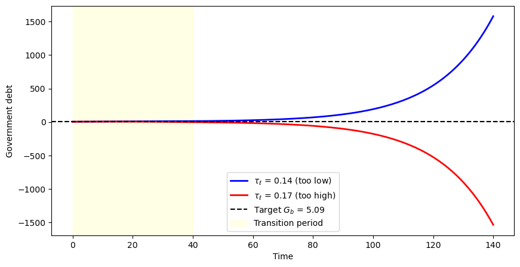
Fig. 83.5 Shooting method for finding the transition tax rate#
The blue curve shows government debt increasing over time when the tax rate is too low, while the red curve shows debt falling below the target when the tax rate is too high.
The equilibrium transition tax rate lies between these two extremes, at the value where terminal debt exactly matches the target \(G_b\).
Bisection automates this shooting procedure.
For Experiment 1, each cohort alive at \(s_1\) must also be compensated by the present value of the social security benefits it would have received under the original system.
_compute_compensation evaluates this present value for a single cohort identified by its remaining lifetime.
def _compute_compensation(
death_time, τ_l_seq, τ_a_seq,
benef_diff, RR_seq, w_seq,
ε_arr, indices, ss0_τ_l):
"""Present value of lost benefits for one cohort."""
n_periods = death_time + 1
age_at_0 = T0 - death_time
time_mask = indices < n_periods
age_mask = indices >= age_at_0
τ_l_cohort = jnp.where(time_mask, τ_l_seq[:T0 + 1], 0.0)
τ_a_cohort = jnp.where(time_mask, τ_a_seq[:T0 + 1], 0.0)
RR_cohort = jnp.where(time_mask, RR_seq[:T0 + 1], 1.0)
w_cohort = jnp.where(time_mask, w_seq[:T0 + 1], 0.0)
ε_masked = jnp.where(age_mask, ε_arr, 0.0)
benef_masked = jnp.where(age_mask, benef_diff, 0.0)
benef_masked = jnp.where(ε_masked != 0, 0.0, benef_masked)
age_idx = jnp.clip(age_at_0 + indices, 0, T0)
ε_cohort = jnp.where(
time_mask, ε_arr[age_idx], 0.0
)
benef_cohort = jnp.where(
time_mask, benef_diff[age_idx], 0.0
)
benef_cohort = jnp.where(ε_cohort != 0, 0.0, benef_cohort)
RR_tilde_seq = RR_cohort - τ_a_cohort * (RR_cohort - 1)
RR_tilde_seq = jnp.where(time_mask, RR_tilde_seq, 1.0)
discount_factors = jnp.cumprod(RR_tilde_seq)
labor_loss = w_cohort * ε_cohort * (τ_l_cohort - ss0_τ_l)
pv_seq = jnp.where(
time_mask,
(benef_cohort + labor_loss) / discount_factors,
0.0
)
valid = (death_time >= 0) & (death_time < T0)
return jnp.where(valid, jnp.sum(pv_seq), 0.0)
apply_compensation vectorizes this calculation across all cohorts with vmap and adds the result to each cohort’s initial asset holdings.
@jit
def apply_compensation(
μx_arr_ss0, Σx_arr_ss0,
τ_l_seq, τ_a_seq, benef_diff,
RR_seq, w_seq, ε_arr, ss0_τ_l,
ages_full, ages, x0, Σ0,
comp_mult):
"""Vectorize compensation across cohorts and adjust initial assets."""
def compute_comp_for_age(age):
death_time = T0 - age
comp = _compute_compensation(
death_time,
τ_l_seq, τ_a_seq, benef_diff,
RR_seq, w_seq, ε_arr,
ages, ss0_τ_l
)
valid = (age >= 1) & (age <= T0)
return jnp.where(valid, comp, 0.0)
compensations = vmap(compute_comp_for_age)(ages_full)
μx_init = jnp.zeros_like(μx_arr_ss0)
Σx_init = jnp.zeros_like(Σx_arr_ss0)
μx_init = μx_init.at[0].set(x0)
Σx_init = Σx_init.at[0].set(Σ0)
μx_init = μx_init.at[-1].set(x0)
Σx_init = Σx_init.at[-1].set(Σ0)
μx_init = μx_init.at[1:-1].set(μx_arr_ss0[1:-1])
Σx_init = Σx_init.at[1:-1].set(Σx_arr_ss0[1:-1])
# comp_mult: 0.0 = no compensation, 1.0 = full
μx_init = μx_init.at[:, 0].add(comp_mult * compensations)
return μx_init, Σx_init
_transition_carryover applies compensation, solves the transition, and returns the terminal debt carryover – the scalar the bisection drives to zero.
def _transition_carryover(
τ_l_trans, price_seq, policy_seq,
ss1_P_arr, ss1_ξ_arr, ss1_Gb,
ss0_μx_arr, ss0_Σx_arr, k_bar_init,
benef_diff, ss0_τ_l, comp_mult,
s_indices, age_range, S1, S2,
ε_arr, β_arr, Ind_work,
ρ_d, σ, B, C, R, Q, H,
P_end, ξ_end, x0, Σ0,
frac, n):
"""Terminal debt carryover for a given transition τ_l."""
ages = age_range[:-1] # arange(T0+1)
# Update policy sequence with transition tax
mask = (s_indices >= S1 + 1) & (s_indices <= S2)
τ_l_col = jnp.where(mask, τ_l_trans, policy_seq[:, 0])
policy_seq_updated = policy_seq.at[:, 0].set(τ_l_col)
# Compute initial conditions (compensation zeroed when comp_mult=0.0)
μx_init, Σx_init = apply_compensation(
ss0_μx_arr, ss0_Σx_arr,
policy_seq_updated[:, 0], policy_seq_updated[:, 1], benef_diff,
price_seq[:, 0], price_seq[:, 1],
ε_arr, ss0_τ_l,
age_range, ages, x0, Σ0,
comp_mult
)
carryover, *_ = _transition_paths(
τ_l_trans, price_seq, policy_seq,
ss1_P_arr, ss1_ξ_arr, ss1_Gb,
μx_init, Σx_init, k_bar_init,
s_indices, age_range, S1, S2,
ε_arr, β_arr, Ind_work,
ρ_d, σ, B, C, R, Q, H,
P_end, ξ_end, x0, Σ0,
frac, n
)
return carryover
We implement the bisection search in _find_transition_tau_l, which repeatedly evaluates _transition_carryover at the midpoint of a shrinking interval until the carryover is driven to zero.
@jit
def _find_transition_tau_l(
price_seq, policy_seq, bounds,
ss1_P_arr, ss1_ξ_arr, ss1_Gb,
ss0_μx_arr, ss0_Σx_arr, k_bar_init,
benef_diff, ss0_τ_l, comp_mult,
s_indices, age_range, S1, S2,
ε_arr, β_arr, Ind_work,
ρ_d, σ, B, C, R, Q, H,
P_end, ξ_end, x0, Σ0,
frac, n):
"""Find transition τ_l using bisection.
comp_mult controls compensation (0 or 1).
"""
a, b = bounds[0], bounds[1]
def compute_carryover(τ_l_trans):
return _transition_carryover(
τ_l_trans, price_seq, policy_seq,
ss1_P_arr, ss1_ξ_arr, ss1_Gb,
ss0_μx_arr, ss0_Σx_arr, k_bar_init,
benef_diff, ss0_τ_l, comp_mult,
s_indices, age_range,
S1, S2,
ε_arr, β_arr, Ind_work,
ρ_d, σ, B, C, R, Q, H,
P_end, ξ_end, x0, Σ0,
frac, n
)
def cond_fn(state):
a, b, fa, fb, i = state
return (jnp.abs(b - a) > 1e-10) & (i < 100)
def body_fn(state):
a, b, fa, fb, i = state
c = (a + b) / 2.0
fc = compute_carryover(c)
a_new = jnp.where(fa * fc > 0, c, a)
b_new = jnp.where(fa * fc > 0, b, c)
fa_new = jnp.where(fa * fc > 0, fc, fa)
fb_new = jnp.where(fa * fc > 0, fb, fc)
return (a_new, b_new, fa_new, fb_new, i + 1)
fa, fb = compute_carryover(a), compute_carryover(b)
init_state = (a, b, fa, fb, 0)
final_state = lax.while_loop(cond_fn, body_fn, init_state)
a_final, b_final, _, _, _ = final_state
return (a_final + b_final) / 2.0
The top-level wrapper find_transition_exo sets up the compensation parameters and calls the bisection solver, then recomputes the full transition path at the equilibrium tax rate.
def find_transition_exo(price_seq, policy_seq_base, ss0, ss1,
hh, tech, S, S1, S2,
compensation_data=None,
τl_bounds=(0.01, 0.6)):
"""Find transition tax rate under exogenous prices."""
policy_seq = jnp.asarray(policy_seq_base)
price_seq = jnp.asarray(price_seq)
bounds = jnp.array([τl_bounds[0], τl_bounds[1]])
s_indices = jnp.arange(S + 2)
# Set up compensation parameters (default zeros when not using compensation)
if compensation_data is not None:
benef_diff, ss0_τ_l = compensation_data
comp_mult = 1.0
else:
benef_diff = jnp.zeros(hh.T0 + 1)
ss0_τ_l = ss0.τ_l
comp_mult = 0.0
# Find transition tax using unified function
τ_l_trans = _find_transition_tau_l(
price_seq, policy_seq, bounds,
ss1.P_arr, ss1.ξ_arr, float(ss1.Gb),
ss0.μx_arr, ss0.Σx_arr, float(ss0.k_bar),
benef_diff, float(ss0_τ_l), comp_mult,
s_indices, AGE_INDICES,
S1, S2,
hh.ε_arr, hh.β_arr, hh.Ind_work,
hh.ρ_d, hh.σ, hh.B, hh.C,
hh.R, hh.Q, hh.H,
hh.P_end, hh.ξ_end, hh.x0, hh.Σ0,
hh.frac, hh.n
)
τ_l_trans = float(τ_l_trans)
# Compute final results with initial conditions
mask = (s_indices >= S1 + 1) & (s_indices <= S2)
τ_l_col = jnp.where(
mask, τ_l_trans, policy_seq[:, 0]
)
policy_seq_final = policy_seq.at[:, 0].set(
τ_l_col
)
μx_init, Σx_init = apply_compensation(
ss0.μx_arr, ss0.Σx_arr,
policy_seq_final[:, 0],
policy_seq_final[:, 1],
benef_diff,
price_seq[:, 0], price_seq[:, 1],
hh.ε_arr, float(ss0_τ_l),
AGE_INDICES, AGE_INDICES[:-1],
hh.x0, hh.Σ0, comp_mult
)
results = transition_paths(
τ_l_trans, price_seq, policy_seq,
ss0, ss1, hh, tech, S, S1, S2,
μx_init, Σx_init
)
return τ_l_trans, results
Bisection over the transition tax rate produces the equilibrium path.
τ_l_trans, results = find_transition_exo(
price_seq, policy_seq_base, ss0, ss1,
hh, tech, S_exo, S1, S2)
carryover, μx_seq, μc_seq, k_seq, Gb_seq, F_seq, Ao_seq = results
In the baseline case (no compensation), social security benefits are simply terminated.
τ_l_seq = np.zeros(S_exo + 1)
τ_l_seq[:S1 + 1] = ss0.τ_l
τ_l_seq[S1 + 1:S2 + 1] = τ_l_trans
τ_l_seq[S2 + 1:] = ss1.τ_l
fig, axes = plt.subplots(1, 2, figsize=(12, 4))
axes[0].plot(τ_l_seq, 'b-', linewidth=2)
axes[0].axhline(ss0.τ_l, color='r', linestyle=':',
label=f'Initial $\\tau_\\ell$ = {ss0.τ_l:.4f}')
axes[0].axhline(ss1.τ_l, color='g', linestyle=':',
label=f'Terminal $\\tau_\\ell$ = {ss1.τ_l:.4f}')
axes[0].axvspan(S1, S2, alpha=0.1, color='yellow')
axes[0].set_xlabel('Time')
axes[0].set_ylabel('Labor tax rate')
axes[0].set_title('Labor tax rate path')
axes[0].legend()
axes[1].plot(Gb_seq, 'b-', linewidth=2)
axes[1].axhline(ss0.Gb, color='r', linestyle=':',
label=f'Initial $G_b$ = {ss0.Gb:.2f}')
axes[1].axhline(ss1.Gb, color='g', linestyle=':',
label=f'Terminal $G_b$ = {ss1.Gb:.2f}')
axes[1].axvspan(S1, S2, alpha=0.1, color='yellow')
axes[1].set_xlabel('Time')
axes[1].set_ylabel('Government debt')
axes[1].set_title('Government debt path')
axes[1].legend()
plt.tight_layout()
plt.show()
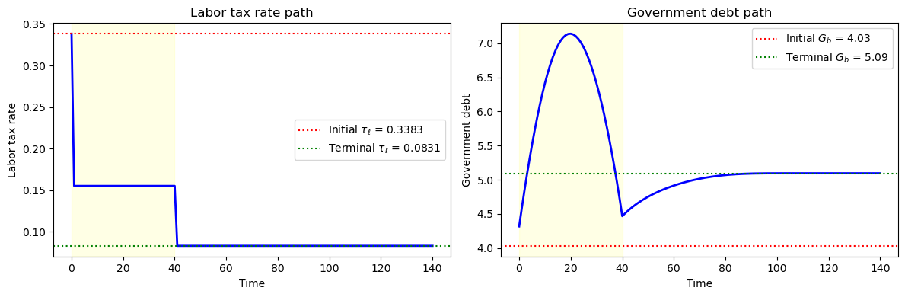
Fig. 83.6 Baseline transition path (no compensation)#
The left panel shows the labor tax rate dropping during the transition because the government no longer needs to fund social security benefits.
The right panel shows government debt converging from its initial level to the new steady-state level, with the shaded region marking the transition period \([s_1, s_2)\).
83.8. Experiment 1: compensation through debt#
In this experiment, the government terminates social security benefits but compensates affected generations.
Each cohort receives a transfer equal to the present value of the benefits they would have received – an actuarially fair buy-out.
Algorithm 83.2 (Fixed factor prices – Experiment 1 (buy-out))
Here \(s_3 = s_2 + T_0 = 105\).
Step 1. Set up parameters.
Step 2. Solve the initial stationary equilibrium with constant social security benefit \(S\): fix \(\tau_a, \tau_0, S, G, \bar{b}\) and solve for \(\tau_\ell = \tau_{\ell,0}\) such that the government budget balances:
F(τ_ℓ) = government budget imbalance
Find root of F(τ_ℓ) = 0.
Step 3. Solve the terminal stationary equilibrium with no social security: search over \(\bar{b}\) so that the debt-to-GDP ratio matches a target:
H(Gb) = debt-to-GDP given Gb
(internally solves F(τ_ℓ; Gb) = 0)
Find root of H(Gb) = target.
The associated labor tax is \(\tau_{\ell,2}\).
Step 4. Solve the transition path: at \(s = 0 = s_1\), all cohorts alive lose benefits and a cohort of age \(t\) receives a one-time compensation equal to the present value of lost benefits, discounted at the after-tax return \(\tilde{R}(s) = R(s)[1-\tau_a(s)]+\tau_a(s)\):
The government sets \(\tau_{\ell,1}\) during \([s_1, s_2)\) and \(\tau_{\ell,2}\) from \(s_2\) onwards, with a one-time expenditure increase of \(\sum f_t \operatorname{comp}_t\) at \(s_1\).
Find \(\tau_{\ell,1}\) such that terminal government debt matches the target:
J(τ_ℓ) = terminal debt carryover
Find root of J(τ_ℓ) = Gb_terminal.
83.8.1. Fixed prices#
We hold factor prices fixed and construct the price and policy sequences for the transition.
The benefit difference vector benef_diff_exp1 records the per-period benefit loss for each age: retirees lose their old-regime benefits, while workers are unaffected.
ss1_exp1_exo = ss1
price_seq_exp1_exo = make_exo_price_seq(S_exo, RR_exo, w_exo)
policy_seq_exp1_exo = make_policy_seq(S_exo, ss0.τ_l, ss1.τ_l, S1, S2,
τ_a_0, τ_0_0, 0, G_0, Gb_0)
benef_diff_exp1 = jnp.zeros(hh.T0 + 1)
benef_diff_exp1 = benef_diff_exp1.at[hh.T1 + 1:].set(ss0.benef)
The function buyout_compensation_exp1_exo computes the present-value compensation for each cohort alive at the reform date and adds it to their initial assets.
We then solve for the transition tax rate with and without the buy-out, so that we can compare the two paths.
def buyout_compensation_exp1_exo(τ_l_trans, policy_seq_base, price_seq):
"""Compute buy-out compensation under exogenous prices."""
policy_seq = policy_seq_base.copy()
policy_seq[S1 + 1:S2 + 1, 0] = τ_l_trans
return apply_compensation(
ss0.μx_arr, ss0.Σx_arr,
policy_seq[:, 0], policy_seq[:, 1], benef_diff_exp1,
price_seq[:, 0], price_seq[:, 1], hh.ε_arr, ss0.τ_l,
AGE_INDICES, AGE_INDICES[:-1],
hh.x0, hh.Σ0,
1.0 # comp_mult = 1.0 for full compensation
)
# Solve with buyout
τ_l_exp1_exo_bo, results_exp1_exo_bo = find_transition_exo(
price_seq_exp1_exo, policy_seq_exp1_exo, ss0, ss1_exp1_exo,
hh, tech, S_exo, S1, S2,
compensation_data=(benef_diff_exp1, ss0.τ_l)
)
# Solve without buyout (for comparison)
τ_l_exp1_exo_nb, results_exp1_exo_nb = find_transition_exo(
price_seq_exp1_exo, policy_seq_exp1_exo, ss0, ss1_exp1_exo,
hh, tech, S_exo, S1, S2
)
We compare the transition paths with and without buy-out compensation.
exp1_exo = {
'ss0': ss0, 'ss1': ss1_exp1_exo,
'τ_l_buyout': τ_l_exp1_exo_bo, 'τ_l_no_buyout': τ_l_exp1_exo_nb,
'results_buyout': results_exp1_exo_bo,
'results_no_buyout': results_exp1_exo_nb,
'hh': hh, 'tech': tech
}
The following figure shows how the buy-out reshapes initial asset holdings across cohorts.
# Extract results
_, μx_seq_bo, μc_seq_bo, k_seq_bo, Gb_seq_bo, _, _ = exp1_exo['results_buyout']
results_nb = exp1_exo['results_no_buyout']
_, μx_seq_nb, μc_seq_nb, k_seq_nb, Gb_seq_nb, _, _ = results_nb
# Mean assets by age at time s=0 (with vs without buyout)
μa_bo = μx_seq_bo[0, 1:, 0] # Assets at s=0 with buyout
μa_nb = μx_seq_nb[0, 1:, 0] # Assets at s=0 without buyout
# Compensation = difference in initial assets
compensation_by_age = μa_bo - μa_nb
fig, axes = plt.subplots(1, 2, figsize=(14, 5))
# Asset profiles
ages = np.arange(1, hh.T0 + 2)
axes[0].plot(ages, μa_bo, 'b-', linewidth=2, label='With Buyout')
axes[0].plot(ages, μa_nb, 'r--', linewidth=2, label='Without Buyout')
axes[0].axvline(hh.T1 + 1, color='gray', linestyle=':', label='Retirement')
axes[0].set_xlabel('Age (t)')
axes[0].set_ylabel('Mean Assets')
axes[0].set_title('Asset Holdings by Age at s=0')
axes[0].legend()
# Compensation histogram
working_ages = ages[ages <= hh.T1 + 1]
retired_ages = ages[ages > hh.T1 + 1]
comp_working = compensation_by_age[:hh.T1 + 1]
comp_retired = compensation_by_age[hh.T1 + 1:]
axes[1].bar(working_ages, comp_working,
color='blue', alpha=0.7, label='Workers')
axes[1].bar(retired_ages, comp_retired,
color='red', alpha=0.7, label='Retirees')
axes[1].axhline(0, color='k', linewidth=0.5)
axes[1].axvline(hh.T1 + 1, color='gray', linestyle=':', label='Retirement')
axes[1].set_xlabel('Age (t)')
axes[1].set_ylabel('Compensation Amount')
axes[1].set_title('Compensation by Age (Added to Initial Assets)')
axes[1].legend()
plt.tight_layout()
plt.show()
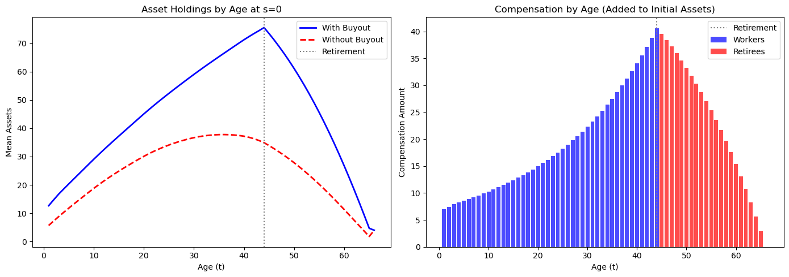
Retirees receive the largest compensation because they were expecting benefits for the remainder of their lives.
Older workers receive significant compensation, while young workers receive little because they have their entire working lives to adjust.
The declining profile among retirees reflects the actuarial calculation: older retirees have fewer remaining years of expected benefits.
We now plot the aggregate transition paths for the labor tax, government debt, capital, and consumption under both schemes.
# hh, tech, ss0, ss1 already in scope — just alias from dict for readability
ss0_exp1 = exp1_exo['ss0']
ss1_exp1 = exp1_exo['ss1']
# Construct τ_l sequences
τ_l_seq_bo = np.zeros(S_exo + 1)
τ_l_seq_bo[:S1 + 1] = ss0_exp1.τ_l
τ_l_seq_bo[S1 + 1:S2 + 1] = exp1_exo['τ_l_buyout']
τ_l_seq_bo[S2 + 1:] = ss1_exp1.τ_l
τ_l_seq_nb = np.zeros(S_exo + 1)
τ_l_seq_nb[:S1 + 1] = ss0_exp1.τ_l
τ_l_seq_nb[S1 + 1:S2 + 1] = exp1_exo['τ_l_no_buyout']
τ_l_seq_nb[S2 + 1:] = ss1_exp1.τ_l
fig, axes = plt.subplots(2, 2, figsize=(14, 10))
# τ_l comparison
axes[0, 0].plot(τ_l_seq_bo, 'b-', linewidth=2, label='With Buyout')
axes[0, 0].plot(τ_l_seq_nb, 'r--', linewidth=2, label='Without Buyout')
axes[0, 0].axvspan(S1, S2, alpha=0.1, color='yellow')
axes[0, 0].set_xlabel('Time (s)')
axes[0, 0].set_ylabel('Labor Tax Rate')
axes[0, 0].set_title('Labor Tax Rate Path')
axes[0, 0].legend()
# Gb comparison
axes[0, 1].plot(Gb_seq_bo, 'b-', linewidth=2, label='With Buyout')
axes[0, 1].plot(Gb_seq_nb, 'r--', linewidth=2, label='Without Buyout')
axes[0, 1].axhline(ss1_exp1.Gb, color='k', linestyle=':', alpha=0.7)
axes[0, 1].axvspan(S1, S2, alpha=0.1, color='yellow')
axes[0, 1].set_xlabel('Time (s)')
axes[0, 1].set_ylabel('Government Debt')
axes[0, 1].set_title('Government Debt Path')
axes[0, 1].legend()
# Capital path
axes[1, 0].plot(k_seq_bo, 'b-', linewidth=2, label='With Buyout')
axes[1, 0].plot(k_seq_nb, 'r--', linewidth=2, label='Without Buyout')
axes[1, 0].axvspan(S1, S2, alpha=0.1, color='yellow')
axes[1, 0].set_xlabel('Time (s)')
axes[1, 0].set_ylabel('Capital Stock')
axes[1, 0].set_title('Capital Accumulation Path')
axes[1, 0].legend()
# Aggregate consumption
c_agg_bo = np.array(μc_seq_bo[:S_exo + 1]) @ np.array(hh.frac)
c_agg_nb = np.array(μc_seq_nb[:S_exo + 1]) @ np.array(hh.frac)
axes[1, 1].plot(c_agg_bo, 'b-', linewidth=2, label='With Buyout')
axes[1, 1].plot(c_agg_nb, 'r--', linewidth=2, label='Without Buyout')
axes[1, 1].axvspan(S1, S2, alpha=0.1, color='yellow')
axes[1, 1].set_xlabel('Time (s)')
axes[1, 1].set_ylabel('Aggregate Consumption')
axes[1, 1].set_title('Aggregate Consumption Path')
axes[1, 1].legend()
plt.suptitle(
'Experiment 1: Compensation on Transition Paths',
fontsize=14, y=1.02
)
plt.show()
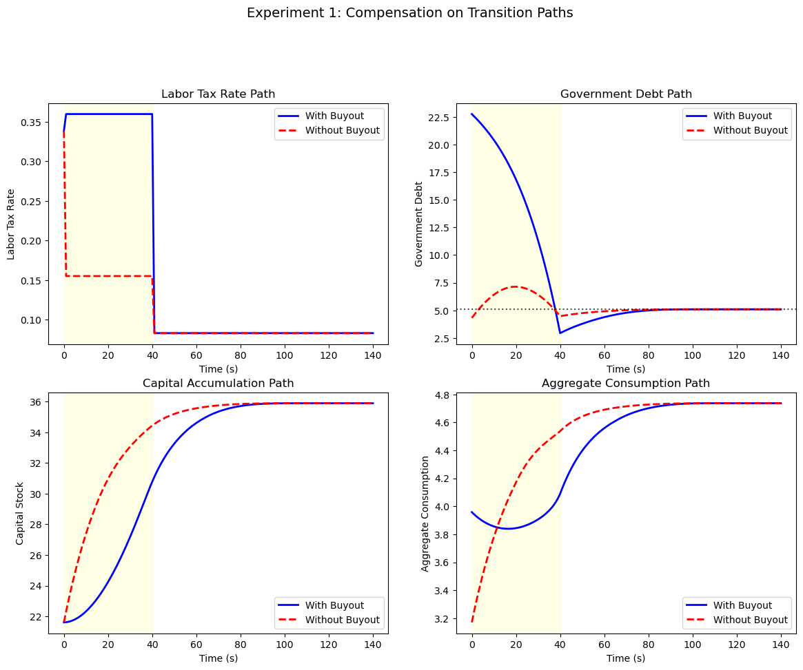
The buy-out scheme leads to a slower initial rise in private capital because the government must make large transfers.
Both schemes converge to the same terminal steady state.
We now examine consumption paths for cohorts at different ages when the reform occurs.
fig, axes = plt.subplots(2, 2, figsize=(14, 10))
selected_ages = [0, 20, 40, 60] # Cohorts at different ages at s=0
for idx, age_at_0 in enumerate(selected_ages):
ax = axes[idx // 2, idx % 2]
remaining_life = hh.T0 - age_at_0
max_time = min(remaining_life + 1, S_exo + 1)
c_bo = [μc_seq_bo[s, age_at_0 + s]
for s in range(max_time)
if age_at_0 + s <= hh.T0]
c_nb = [μc_seq_nb[s, age_at_0 + s]
for s in range(max_time)
if age_at_0 + s <= hh.T0]
ax.plot(c_bo, 'b-', linewidth=2, label='With Buyout')
ax.plot(c_nb, 'r--', linewidth=2, label='Without Buyout')
ax.set_xlabel('Time since s=0')
ax.set_ylabel('Mean Consumption')
ax.set_title(f'Cohort age {age_at_0} at s=0')
ax.legend(fontsize=9)
plt.suptitle(
'Consumption Paths by Cohort (Experiment 1)',
fontsize=14, y=1.02
)
plt.show()
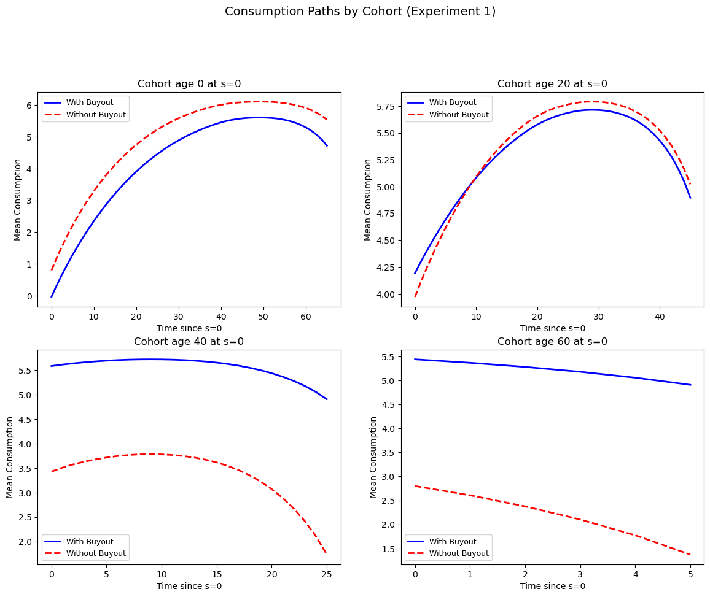
Young workers (age 0) show nearly identical consumption paths because they receive little compensation and have decades to adjust their savings.
Near-retirement workers (age 40) exhibit more noticeable differences as the buyout compensation partially offsets their lost benefits.
Retirees (age 60) show the most dramatic difference: without compensation, their consumption drops sharply when benefits end, whereas the buyout scheme maintains higher consumption by replacing the lost income.
83.8.2. Endogenous prices#
With endogenous factor prices, changes in saving behavior affect capital accumulation, which alters marginal products and feeds back into household decisions.
Algorithm 83.3 (Endogenous factor prices)
Here \(s_3 = s_2 + 2T_0 = 170\).
Steps 1–3 are the same as Algorithm 83.2, with an outer fixed-point loop over factor prices to clear factor markets in steady state.
Step 4. The factor price sequences are now endogenous.
Wrap the fixed-price transition solver in a relaxation loop:
T(R_seq):
1. Compute the wage sequence from R_seq via Cobb-Douglas.
2. Taking prices as given, find root of J(τ_ℓ) = Gb_terminal.
3. Compute the implied capital path, then the implied R*.
Return R* − R_seq.
Iterate T(R_seq) = 0 with relaxation until convergence.
We iterate on the price sequence until factor markets clear.
@jit
def compute_factor_prices(k_prod, ε_bar, A, α, δ):
"""Compute factor prices from Cobb-Douglas."""
k_per_eff = k_prod / ε_bar
r = A * α * (k_per_eff ** (α - 1))
w = A * (1 - α) * (k_per_eff ** α)
RR = 1 + r - δ
return r, w, RR
With endogenous prices, finding a steady state requires an outer fixed-point loop: solve the household problem at given prices, compute the implied capital stock, update prices via Cobb-Douglas marginal products, and repeat until convergence.
def find_ss_endo(
debt2gdp_target, policy_target,
hh, tech, RR_init=None, w_init=None,
max_iter=50, tol=1e-5, verbose=False):
"""Find steady state with endogenous factor prices."""
τ_a, τ_0, benef, G = policy_target
ε_bar = float(jnp.sum(hh.frac * hh.ε_arr))
RR = RR_init if RR_init else tech.RR
w = w_init if w_init else tech.w
relaxation = 0.3
for iteration in range(max_iter):
try:
ss = ss_target_debt2gdp_exo(
debt2gdp_target,
(τ_a, τ_0, benef, G),
(RR, w), hh, tech
)
except ValueError:
RR = RR * 0.99
continue
K_eff = ss.k_bar / hh.n + float(hh.frac[0] * hh.x0[0])
r_new, w_new, RR_new = compute_factor_prices(
K_eff, ε_bar,
tech.A, tech.α_tilde, tech.δ
)
r_new = float(r_new)
w_new = float(w_new)
RR_new = float(RR_new)
price_diff = abs(RR_new - RR) + abs(w_new - w)
if verbose and iteration % 5 == 0:
print(f" SS iter {iteration}: "
f"RR={RR:.6f}, w={w:.4f}, "
f"k_bar={ss.k_bar:.4f}")
if price_diff < tol:
if verbose:
print(f" Converged at iteration {iteration}")
break
RR = RR + relaxation * (RR_new - RR)
w = w + relaxation * (w_new - w)
return ss_target_debt2gdp_exo(
debt2gdp_target,
(τ_a, τ_0, benef, G),
(RR, w), hh, tech
)
The price iteration also needs an initial guess for the transition price path and a way to update it after each inner solve.
The function init_price_seq_interp linearly interpolates between the two steady-state price vectors, while _update_prices_from_capital recomputes factor prices from the capital path via Cobb-Douglas marginal products.
def init_price_seq_interp(S, S1, S3, ss0_RR, ss0_w, ss1_RR, ss1_w):
"""Linearly interpolate price sequence between steady states."""
s_indices = jnp.arange(S + 2)
t_frac = jnp.clip((s_indices - S1) / (S3 - S1), 0.0, 1.0)
RR_seq = ss0_RR + t_frac * (ss1_RR - ss0_RR)
w_seq = ss0_w + t_frac * (ss1_w - ss0_w)
RR_seq = jnp.where(s_indices <= S1, ss0_RR, RR_seq)
w_seq = jnp.where(s_indices <= S1, ss0_w, w_seq)
RR_seq = jnp.where(s_indices >= S3, ss1_RR, RR_seq)
w_seq = jnp.where(s_indices >= S3, ss1_w, w_seq)
return jnp.column_stack([RR_seq, w_seq])
@jit
def _update_prices_from_capital(
k_seq, k_bar_ss0, n, frac0_x0,
ε_bar, A, α, δ,
s_indices_full, ss1_RR, ss1_w, S3):
"""Compute new price sequence from the capital path."""
k_prev = jnp.concatenate([jnp.array([k_bar_ss0]), k_seq[:-1]])
K_eff = k_prev / n + frac0_x0
k_per_eff = K_eff / ε_bar
r_new = A * α * (k_per_eff ** (α - 1))
w_new = A * (1 - α) * (k_per_eff ** α)
RR_new = 1 + r_new - δ
price_seq_new = jnp.column_stack([RR_new, w_new])
price_seq_new = jnp.concatenate([price_seq_new, price_seq_new[-1:]], axis=0)
terminal_prices = jnp.array([[ss1_RR, ss1_w]])
mask = s_indices_full >= S3
price_seq_new = jnp.where(mask[:, None], terminal_prices, price_seq_new)
return price_seq_new
The top-level function find_transition_endo wraps everything in a relaxation loop: at each iteration it solves the transition under current prices, computes the implied capital path, updates prices, and checks for convergence.
def find_transition_endo(price_seq, policy_seq_base,
ss0, ss1, hh, tech, S, S1, S2, S3,
compensation_data=None,
max_iter=50, tol=1e-3,
relaxation=0.5, verbose=False):
"""Find transition with endogenous prices."""
ε_bar = float(jnp.sum(hh.frac * hh.ε_arr))
frac0_x0 = float(hh.frac[0] * hh.x0[0])
price_seq = jnp.asarray(price_seq)
policy_seq_base = jnp.asarray(policy_seq_base)
# Pre-create iteration arrays for price update
s_indices_full = jnp.arange(S + 2)
if verbose:
print(" Starting price iteration...")
for iteration in range(max_iter):
try:
τ_l_trans, results = find_transition_exo(
price_seq, policy_seq_base, ss0, ss1,
hh, tech, S, S1, S2,
compensation_data=compensation_data
)
except ValueError:
τ_l_trans = 0.35
results = transition_paths(
τ_l_trans, price_seq, policy_seq_base,
ss0, ss1, hh, tech, S, S1, S2,
ss0.μx_arr, ss0.Σx_arr
)
_, μx_seq, μc_seq, k_seq, Gb_seq, F_seq, Ao_seq = results
price_seq_new = _update_prices_from_capital(
k_seq, float(ss0.k_bar), hh.n, float(frac0_x0), float(ε_bar),
tech.A, tech.α_tilde, tech.δ,
s_indices_full,
float(ss1.RR), float(ss1.w), S3
)
price_diff = float(jnp.max(jnp.abs(price_seq_new - price_seq)))
if verbose:
print(f" Iter {iteration}: "
f"τ_l={τ_l_trans:.4f}, "
f"price_diff={price_diff:.6f}")
if price_diff < tol:
if verbose:
print(f" Converged at iteration {iteration}")
break
price_seq = price_seq + relaxation * (price_seq_new - price_seq)
return τ_l_trans, price_seq, results
We now compute the initial and terminal steady states under endogenous prices and solve the transition with price iteration.
# Compute endogenous prices for initial SS
ε_bar = float(jnp.sum(hh.frac * hh.ε_arr))
K_eff_0 = ss0.k_bar / hh.n + float(hh.frac[0] * hh.x0[0])
r0_endo, w0_endo, RR0_endo = compute_factor_prices(
K_eff_0, ε_bar,
tech.A, tech.α_tilde, tech.δ
)
r0_endo = float(r0_endo)
w0_endo = float(w0_endo)
RR0_endo = float(RR0_endo)
ss0_exp1_endo = SteadyState(
P_arr=ss0.P_arr, ξ_arr=ss0.ξ_arr, Ao_arr=ss0.Ao_arr, F_arr=ss0.F_arr,
μx_arr=ss0.μx_arr, μc_arr=ss0.μc_arr, Σx_arr=ss0.Σx_arr, Vc_arr=ss0.Vc_arr,
debt2gdp=ss0.debt2gdp, τ_l=ss0.τ_l, benef=ss0.benef, Gb=ss0.Gb,
k_bar=ss0.k_bar, RR=RR0_endo, w=w0_endo, r=r0_endo, k2gdp=ss0.k2gdp
)
ss1_exp1_endo = find_ss_endo(
ss0.debt2gdp, (τ_a_0, τ_0_0, 0, G_0), hh, tech,
RR_init=tech.RR, w_init=tech.w, verbose=True
)
SS iter 0: RR=1.067500, w=5.0147, k_bar=35.8906
SS iter 5: RR=1.044957, w=5.7366, k_bar=30.4338
SS iter 10: RR=1.044407, w=5.7330, k_bar=30.1611
SS iter 15: RR=1.044405, w=5.7291, k_bar=30.1587
SS iter 20: RR=1.044406, w=5.7284, k_bar=30.1588
SS iter 25: RR=1.044406, w=5.7283, k_bar=30.1588
Converged at iteration 28
The initial price guess interpolates linearly between the two steady states.
# Initialize price sequence
price_seq_exp1_endo = init_price_seq_interp(
S_endo, S1, S3,
float(ss0_exp1_endo.RR), float(ss0_exp1_endo.w),
float(ss1_exp1_endo.RR), float(ss1_exp1_endo.w)
)
# Policy sequence
policy_seq_exp1_endo = make_policy_seq(
S_endo,
ss0_exp1_endo.τ_l, ss1_exp1_endo.τ_l,
S1, S2,
τ_a_0, τ_0_0, 0, G_0,
ss0_exp1_endo.Gb
)
The benefit difference vector records the benefit loss at each age, and the price iteration finds the equilibrium transition path with buy-out compensation.
# Buyout compensation
benef_diff_exp1_endo = jnp.zeros(hh.T0 + 1)
benef_diff = ss0_exp1_endo.benef - ss1_exp1_endo.benef
benef_diff_exp1_endo = benef_diff_exp1_endo.at[
hh.T1 + 1:
].set(benef_diff)
# Solve with price iteration
print("\n Solving transition with endogenous prices...")
endo_result = find_transition_endo(
price_seq_exp1_endo, policy_seq_exp1_endo,
ss0_exp1_endo, ss1_exp1_endo,
hh, tech, S_endo, S1, S2, S3,
compensation_data=(
benef_diff_exp1_endo,
ss0_exp1_endo.τ_l
),
verbose=True
)
τ_l_exp1_endo_bo = endo_result[0]
price_seq_exp1_endo_conv = endo_result[1]
results_exp1_endo = endo_result[2]
(_, μx_seq_exp1_endo, μc_seq_exp1_endo,
k_seq_exp1_endo, Gb_seq_exp1_endo,
_, _) = results_exp1_endo
Solving transition with endogenous prices...
Starting price iteration...
Iter 0: τ_l=0.3391, price_diff=0.490311
Iter 1: τ_l=0.3549, price_diff=0.184939
Iter 2: τ_l=0.3637, price_diff=0.064441
Iter 3: τ_l=0.3676, price_diff=0.021013
Iter 4: τ_l=0.3692, price_diff=0.006973
Iter 5: τ_l=0.3698, price_diff=0.002371
Iter 6: τ_l=0.3701, price_diff=0.000828
Converged at iteration 6
The endogenous-price results are stored for comparison with the fixed-price case.
exp1_endo = {
'ss0': ss0_exp1_endo, 'ss1': ss1_exp1_endo,
'τ_l_buyout': τ_l_exp1_endo_bo,
'price_seq': price_seq_exp1_endo_conv,
'k_seq': k_seq_exp1_endo, 'Gb_seq': Gb_seq_exp1_endo,
'results': results_exp1_endo,
'μc_seq': μc_seq_exp1_endo, 'μx_seq': μx_seq_exp1_endo
}
The following figure compares the transition paths under fixed and endogenous factor prices, showing how general equilibrium effects alter the tax, debt, interest rate, and wage paths.
# Get endogenous price sequences
price_seq_endo = exp1_endo['price_seq']
S_endo = price_seq_endo.shape[0] - 2
# Construct fixed price sequences for comparison
RR_fixed = tech.RR
w_fixed = tech.w
# For fixed prices, construct τ_l sequence
τ_l_seq_fixed = np.zeros(S_exo + 1)
τ_l_seq_fixed[:S1 + 1] = ss0_exp1.τ_l
τ_l_seq_fixed[S1 + 1:S2 + 1] = exp1_exo['τ_l_buyout']
τ_l_seq_fixed[S2 + 1:] = ss1_exp1.τ_l
# For endogenous prices
τ_l_seq_endo = np.zeros(S_endo + 1)
τ_l_seq_endo[:S1 + 1] = exp1_endo['ss0'].τ_l
τ_l_seq_endo[S1 + 1:S2 + 1] = exp1_endo['τ_l_buyout']
τ_l_seq_endo[S2 + 1:] = exp1_endo['ss1'].τ_l
fig, axes = plt.subplots(2, 2, figsize=(14, 10))
# Labor tax comparison
axes[0, 0].plot(τ_l_seq_fixed, 'b-', linewidth=2, label='Fixed Prices')
axes[0, 0].plot(τ_l_seq_endo[:len(τ_l_seq_fixed)],
'r--', linewidth=2,
label='Endogenous Prices')
axes[0, 0].axvspan(S1, S2, alpha=0.1, color='yellow')
axes[0, 0].set_xlabel('Time (s)')
axes[0, 0].set_ylabel('Labor Tax Rate (τ_l)')
axes[0, 0].set_title('Labor Tax Rate Path')
axes[0, 0].legend()
# Government debt comparison
Gb_seq_fixed = Gb_seq_bo
Gb_seq_endo_exp1 = exp1_endo['Gb_seq']
axes[0, 1].plot(Gb_seq_fixed, 'b-', linewidth=2, label='Fixed Prices')
axes[0, 1].plot(
Gb_seq_endo_exp1[:len(Gb_seq_fixed)],
'r--', linewidth=2,
label='Endogenous Prices'
)
axes[0, 1].axvspan(S1, S2, alpha=0.1, color='yellow')
axes[0, 1].set_xlabel('Time (s)')
axes[0, 1].set_ylabel('Government Debt (Gb)')
axes[0, 1].set_title('Government Debt Path')
axes[0, 1].legend()
# Interest rate comparison
r_fixed = np.full(S_exo + 1, tech.r - tech.δ)
r_endo = price_seq_endo[:-1, 0] - 1 # RR - 1 = r - δ
axes[1, 0].plot(r_fixed, 'b-', linewidth=2, label='Fixed Prices')
axes[1, 0].plot(
r_endo[:len(r_fixed)],
'r--', linewidth=2,
label='Endogenous Prices'
)
axes[1, 0].axvspan(S1, S2, alpha=0.1, color='yellow')
axes[1, 0].set_xlabel('Time (s)')
axes[1, 0].set_ylabel('Interest Rate (r - δ)')
axes[1, 0].set_title('Interest Rate Path')
axes[1, 0].legend()
# Wage rate comparison
w_fixed_seq = np.full(S_exo + 1, tech.w)
w_endo = price_seq_endo[:-1, 1]
axes[1, 1].plot(w_fixed_seq, 'b-', linewidth=2, label='Fixed Prices')
axes[1, 1].plot(
w_endo[:len(w_fixed_seq)],
'r--', linewidth=2,
label='Endogenous Prices'
)
axes[1, 1].axvspan(S1, S2, alpha=0.1, color='yellow')
axes[1, 1].set_xlabel('Time (s)')
axes[1, 1].set_ylabel('Wage Rate (w)')
axes[1, 1].set_title('Wage Rate Path')
axes[1, 1].legend()
plt.suptitle(
'Experiment 1: Fixed vs Endogenous Prices',
fontsize=14, y=1.02
)
plt.show()
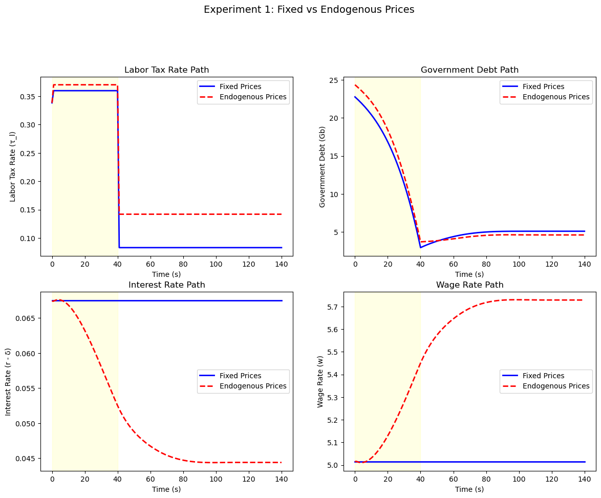
The top-left panel shows that the transition tax rate is similar under both price assumptions, but the bottom panels reveal important differences in factor prices.
As the capital stock rises during the transition, the interest rate falls and the wage rises under endogenous pricing, while these remain constant under the small open economy assumption.
These price effects create additional redistributive consequences beyond those intended by the policy change: lower interest rates benefit young workers through higher wages, but hurt retirees through lower returns on savings.
83.9. Experiment 2: government capital accumulation#
In Experiment 2, the government maintains social security benefits but temporarily raises taxes to accumulate physical capital.
The returns from this capital eventually finance the social security payments, so that in the terminal steady state the government is a net creditor rather than a debtor.
Unlike Experiment 1, which eliminates benefits, this approach preserves the social insurance function of social security – namely, insurance against life span risk and partial insurance against labor income volatility.
By having the government save on behalf of households, the economy can achieve higher capital accumulation while maintaining the intergenerational insurance that social security provides.
Algorithm 83.4 (Fixed factor prices – Experiment 2 (government funding))
Here \(s_3 = s_2 + T_0 = 105\).
Steps 1–3 are the same as Algorithm 83.2, except that social security benefits are maintained and the target debt-to-GDP ratio is negative (the government becomes a net creditor).
The right target induces the government to accumulate sufficient capital to finance benefits from asset returns.
Step 4 is the same root-finding procedure over \(\tau_{\ell,1}\), but without compensation payments.
We first compute the terminal steady state under fixed prices, targeting a negative debt-to-GDP ratio that makes the government a net creditor.
debt2gdp_target_exp2_exo = -1.1785
ss1_exp2_exo = ss_target_debt2gdp_exo(
debt2gdp_target_exp2_exo,
(τ_a_0, τ_0_0, benef_0, G_0),
(RR_exo, w_exo), hh, tech
)
With the terminal steady state in hand, bisection over the transition tax rate gives the equilibrium path under fixed prices.
# Price and policy sequences
price_seq_exp2_exo = make_exo_price_seq(S_exo, RR_exo, w_exo)
policy_seq_exp2_exo = make_policy_seq(
S_exo, ss0.τ_l, ss1_exp2_exo.τ_l,
S1, S2,
τ_a_0, τ_0_0, benef_0, G_0, Gb_0
)
# Solve (no compensation)
τ_l_exp2_exo, results_exp2_exo = find_transition_exo(
price_seq_exp2_exo, policy_seq_exp2_exo, ss0, ss1_exp2_exo,
hh, tech, S_exo, S1, S2
)
The results are packaged for the cross-experiment comparison below.
(carryover_exp2, μx_seq_exp2_exo,
μc_seq_exp2_exo, k_seq_exp2_exo,
Gb_seq_exp2_exo, F_seq_exp2_exo,
Ao_seq_exp2_exo) = results_exp2_exo
exp2_exo = {
'ss0': ss0, 'ss1': ss1_exp2_exo,
'τ_l_trans': τ_l_exp2_exo,
'results': results_exp2_exo,
'k_seq': k_seq_exp2_exo, 'Gb_seq': Gb_seq_exp2_exo,
'μc_seq': μc_seq_exp2_exo, 'μx_seq': μx_seq_exp2_exo
}
We repeat the computation under endogenous factor prices, using the same initial steady state as Experiment 1.
# Compute endogenous prices for initial SS (reuse from Exp 1)
ss0_exp2_endo = ss0_exp1_endo # Same initial SS
# Terminal steady state with endogenous prices
ss1_exp2_endo = find_ss_endo(
debt2gdp_target=-1.925,
policy_target=(τ_a_0, τ_0_0, benef_0, G_0),
hh=hh, tech=tech,
RR_init=tech.RR, w_init=tech.w,
verbose=True
)
SS iter 0: RR=1.067500, w=5.0147, k_bar=43.5570
SS iter 5: RR=1.044472, w=5.7664, k_bar=30.0436
SS iter 10: RR=1.044623, w=5.7272, k_bar=30.0407
SS iter 15: RR=1.044648, w=5.7206, k_bar=30.0403
SS iter 20: RR=1.044651, w=5.7195, k_bar=30.0409
SS iter 25: RR=1.044651, w=5.7193, k_bar=30.0409
Converged at iteration 29
Price iteration produces the endogenous-price transition path.
# Initialize price sequence
price_seq_exp2_endo = init_price_seq_interp(
S_endo, S1, S3,
float(ss0_exp2_endo.RR), float(ss0_exp2_endo.w),
float(ss1_exp2_endo.RR), float(ss1_exp2_endo.w)
)
# Policy sequence
policy_seq_exp2_endo = make_policy_seq(
S_endo,
ss0_exp2_endo.τ_l, ss1_exp2_endo.τ_l,
S1, S2,
τ_a_0, τ_0_0, benef_0, G_0,
ss0_exp2_endo.Gb
)
# Solve with price iteration (no compensation)
endo2 = find_transition_endo(
price_seq_exp2_endo, policy_seq_exp2_endo,
ss0_exp2_endo, ss1_exp2_endo,
hh, tech, S_endo, S1, S2, S3,
verbose=True
)
τ_l_exp2_endo = endo2[0]
price_seq_exp2_endo_conv = endo2[1]
results_exp2_endo = endo2[2]
(_, μx_seq_exp2_endo, μc_seq_exp2_endo,
k_seq_exp2_endo, Gb_seq_exp2_endo,
_, _) = results_exp2_endo
Starting price iteration...
Iter 0: τ_l=0.3660, price_diff=0.394320
Iter 1: τ_l=0.3769, price_diff=0.202210
Iter 2: τ_l=0.3845, price_diff=0.103709
Iter 3: τ_l=0.3891, price_diff=0.050465
Iter 4: τ_l=0.3916, price_diff=0.022852
Iter 5: τ_l=0.3928, price_diff=0.009652
Iter 6: τ_l=0.3933, price_diff=0.003839
Iter 7: τ_l=0.3935, price_diff=0.001457
Iter 8: τ_l=0.3936, price_diff=0.000537
Converged at iteration 8
exp2_endo = {
'ss0': ss0_exp2_endo, 'ss1': ss1_exp2_endo,
'τ_l_trans': τ_l_exp2_endo,
'price_seq': price_seq_exp2_endo_conv,
'k_seq': k_seq_exp2_endo, 'Gb_seq': Gb_seq_exp2_endo,
'results': results_exp2_endo,
'μc_seq': μc_seq_exp2_endo, 'μx_seq': μx_seq_exp2_endo
}
We now compare all four reform scenarios: the buy-out scheme and the government funding scheme, each under fixed and endogenous factor prices.
# Get debt sequences for all cases
Gb_buyout_fixed = Gb_seq_bo
Gb_buyout_endo = exp1_endo['Gb_seq']
Gb_accum_fixed = exp2_exo['Gb_seq']
Gb_accum_endo = exp2_endo['Gb_seq']
# Get capital sequences
k_buyout_fixed = k_seq_bo
k_buyout_endo = exp1_endo['k_seq']
k_accum_fixed = exp2_exo['k_seq']
k_accum_endo = exp2_endo['k_seq']
# Common time horizon for plotting
T_plot = min(len(Gb_buyout_fixed), len(Gb_buyout_endo),
len(Gb_accum_fixed), len(Gb_accum_endo))
fig, axes = plt.subplots(2, 3, figsize=(18, 10))
# Labels for four scenarios
lb = ['Buyout (Fixed)', 'Buyout (Endo)',
'Gov Funding (Fixed)', 'Gov Funding (Endo)']
ls = ['b-', 'b--', 'r-', 'r--']
# Government Debt paths
ax = axes[0, 0]
for d, s, l in zip(
[Gb_buyout_fixed, Gb_buyout_endo,
Gb_accum_fixed, Gb_accum_endo],
ls, lb
):
ax.plot(d[:T_plot], s, linewidth=2, label=l)
ax.axhline(0, color='k', linestyle=':', alpha=0.5)
ax.axvspan(0, 40, alpha=0.1, color='yellow')
ax.set_xlabel('Time (s)')
ax.set_ylabel('Government Debt (Gb)')
ax.set_title('Government Debt Paths')
ax.legend(fontsize=9)
# Capital paths
ax = axes[0, 1]
for d, s, l in zip(
[k_buyout_fixed, k_buyout_endo,
k_accum_fixed, k_accum_endo],
ls, lb
):
ax.plot(d[:T_plot], s, linewidth=2, label=l)
ax.axvspan(0, 40, alpha=0.1, color='yellow')
ax.set_xlabel('Time (s)')
ax.set_ylabel('Capital Stock (K)')
ax.set_title('Capital Accumulation Paths')
ax.legend(fontsize=9)
# Aggregate consumption
res2_exo = exp2_exo['results']
res1_endo = exp1_endo['results']
res2_endo = exp2_endo['results']
_, _, μc_exp2_exo, _, _, _, _ = res2_exo
_, _, μc_exp1_endo, _, _, _, _ = res1_endo
_, _, μc_exp2_endo, _, _, _, _ = res2_endo
def _agg_c(μc, T):
"""Aggregate per-capita consumption across cohorts."""
n = min(T, μc.shape[0])
return np.array([
np.sum(μc[s] * hh.frac) for s in range(n)
])
c_agg_buyout_fixed = c_agg_bo[:T_plot]
c_agg_buyout_endo = _agg_c(μc_exp1_endo, T_plot)
c_agg_accum_fixed = _agg_c(μc_exp2_exo, T_plot)
c_agg_accum_endo = _agg_c(μc_exp2_endo, T_plot)
ax = axes[0, 2]
for d, s, l in zip(
[c_agg_buyout_fixed, c_agg_buyout_endo,
c_agg_accum_fixed, c_agg_accum_endo],
ls, lb
):
ax.plot(d[:T_plot], s, linewidth=2, label=l)
axes[0, 2].axvspan(0, 40, alpha=0.1, color='yellow')
axes[0, 2].set_xlabel('Time (s)')
axes[0, 2].set_ylabel('Aggregate Consumption')
axes[0, 2].set_title('Aggregate Consumption Paths')
axes[0, 2].legend(fontsize=9)
# Bar chart: Transition tax rates
cases = ['Buyout\n(Fixed)', 'Buyout\n(Endo)',
'Gov Fund\n(Fixed)', 'Gov Fund\n(Endo)']
τ_l_values = [exp1_exo['τ_l_buyout'], exp1_endo['τ_l_buyout'],
exp2_exo['τ_l_trans'], exp2_endo['τ_l_trans']]
colors = ['blue', 'lightblue', 'red', 'lightcoral']
axes[1, 0].bar(cases, τ_l_values, color=colors, edgecolor='black')
axes[1, 0].set_ylabel('Transition Tax Rate (τ_l)')
axes[1, 0].set_title('Transition Labor Tax Rates')
axes[1, 0].grid(True, alpha=0.3, axis='y')
for i, v in enumerate(τ_l_values):
axes[1, 0].text(i, v + 0.005, f'{v:.4f}', ha='center', fontsize=9)
# Bar chart: Terminal debt/GDP
debt2gdp_values = [exp1_exo['ss1'].debt2gdp, exp1_endo['ss1'].debt2gdp,
exp2_exo['ss1'].debt2gdp, exp2_endo['ss1'].debt2gdp]
axes[1, 1].bar(cases, debt2gdp_values, color=colors, edgecolor='black')
axes[1, 1].axhline(0, color='k', linestyle='-', linewidth=0.5)
axes[1, 1].set_ylabel('Terminal Debt/GDP')
axes[1, 1].set_title('Terminal Steady State Debt/GDP')
axes[1, 1].grid(True, alpha=0.3, axis='y')
for i, v in enumerate(debt2gdp_values):
y = v + 0.05 if v > 0 else v - 0.15
axes[1, 1].text(
i, y, f'{v:.4f}',
ha='center', fontsize=9
)
# Bar chart: Terminal interest rate
r_values = [exp1_exo['ss1'].r - tech.δ, exp1_endo['ss1'].r - tech.δ,
exp2_exo['ss1'].r - tech.δ, exp2_endo['ss1'].r - tech.δ]
axes[1, 2].bar(cases, r_values, color=colors, edgecolor='black')
axes[1, 2].set_ylabel('Terminal Interest Rate (r - δ)')
axes[1, 2].set_title('Terminal Steady State Interest Rates')
axes[1, 2].grid(True, alpha=0.3, axis='y')
for i, v in enumerate(r_values):
axes[1, 2].text(i, v + 0.002, f'{v:.4f}', ha='center', fontsize=9)
plt.suptitle('Comparison of All Four Reform Scenarios', fontsize=14, y=1.02)
plt.show()
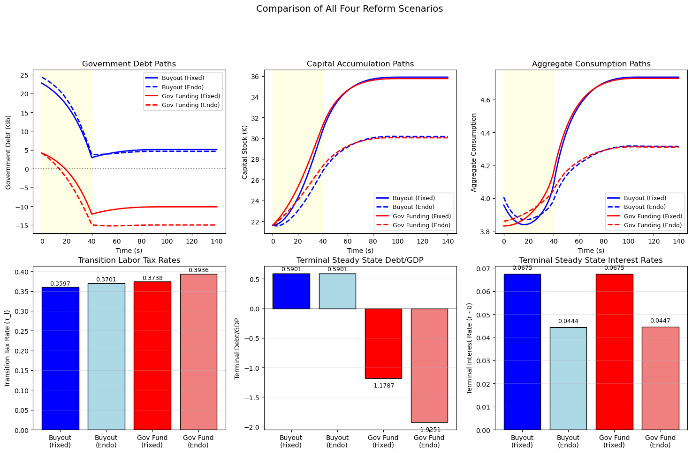
The top row compares transition dynamics: the buy-out scheme (blue) accumulates higher debt during the transition due to compensation payments, while the government funding scheme (red) leads to large negative debt as the government becomes a net creditor.
The bottom-left bar chart shows that government funding requires higher transition tax rates than the buy-out scheme because benefit payments continue alongside capital accumulation.
Under endogenous pricing, the larger capital stock reduces the marginal product of capital and hence interest rates, as shown in the bottom-right panel.
The government-funded scheme (Experiment 2) delivers larger long-run efficiency gains because it preserves insurance against life span risk and labor income volatility that would be lost under privatization.
Higher labor income tax rates during the transition also provide implicit insurance against earnings risk, amplifying the efficiency advantage under endogenous prices.
83.10. Distribution surfaces#
The 3D surface plots below show how assets and consumption evolve over both the age dimension and calendar time.
# Compute variances for 3D plotting
def compute_variances(results, ss0, hh):
"""Compute variance sequences from transition results."""
_, μx_seq, μc_seq, k_seq, Gb_seq, F_seq, Ao_seq = results
# Convert to numpy
μx_seq = np.array(μx_seq)
μc_seq_full = np.array(μc_seq)
F_seq = np.array(F_seq)
Ao_seq = np.array(Ao_seq)
Σx_arr_ss0 = np.array(ss0.Σx_arr)
Σ0 = np.array(hh.Σ0)
C = np.array(hh.C)
# Get actual dimensions from data
S_plus_1 = Ao_seq.shape[0] # S+1
T0_plus_1 = Ao_seq.shape[1] # T0+1
Σx_seq = np.empty((S_plus_1 + 1, T0_plus_1 + 1, hh.n_x, hh.n_x))
Vc_seq = np.empty((S_plus_1, T0_plus_1))
Va_seq = np.empty((S_plus_1, T0_plus_1))
Σx_seq[:, 0] = Σ0
Σx_seq[0, :] = Σx_arr_ss0[:T0_plus_1 + 1]
CCT = C @ C.T
for s in range(S_plus_1):
Ao_s = Ao_seq[s] # (T0+1, n_x, n_x)
Σx_s = Σx_seq[s, :T0_plus_1] # (T0+1, n_x, n_x)
F_s = F_seq[s] # (T0+1, n_x)
Σx_seq[s + 1, 1:] = CCT + Ao_s @ Σx_s @ Ao_s.transpose(0, 2, 1)
Vc_seq[s] = np.einsum('ti,tij,tj->t', F_s, Σx_s, F_s)
Va_seq[s] = Σx_s[:, 0, 0]
# Extract mean assets - match dimensions with Ao_seq
μa_seq = μx_seq[:S_plus_1, :T0_plus_1, 0]
μc_seq_out = μc_seq_full[:S_plus_1, :T0_plus_1]
return μa_seq, Va_seq, μc_seq_out, Vc_seq
# Compute variances for each case
μa_bf, Va_bf, μc_bf, Vc_bf = compute_variances(
exp1_exo['results_buyout'], exp1_exo['ss0'], hh
)
μa_be, Va_be, μc_be, Vc_be = compute_variances(
exp1_endo['results'], exp1_endo['ss0'], hh
)
μa_af, Va_af, μc_af, Vc_af = compute_variances(
exp2_exo['results'], exp2_exo['ss0'], hh
)
μa_ae, Va_ae, μc_ae, Vc_ae = compute_variances(
exp2_endo['results'], exp2_endo['ss0'], hh
)
case_names = [
'Buyout (Fixed)', 'Buyout (Endo)',
'Gov Funding (Fixed)', 'Gov Funding (Endo)'
]
def plot_surface_grid(
data_cases, case_names, zlabel,
suptitle, cmap='viridis',
transform=None):
"""Plot 2x2 grid of 3D surfaces for age-time data."""
fig = plt.figure(figsize=(16, 12))
for i, (data, name) in enumerate(zip(data_cases, case_names)):
Z = transform(data) if transform is not None else data
n_time, n_age = Z.shape
X, Y = np.meshgrid(np.arange(n_age), np.arange(n_time))
ax = fig.add_subplot(2, 2, i + 1, projection='3d')
ax.plot_surface(X, Y, Z, cmap=cmap, edgecolor='none', alpha=0.8)
ax.set_xlabel('Age (t)')
ax.set_ylabel('Time (s)')
ax.set_zlabel(zlabel)
ax.set_title(name)
plt.suptitle(suptitle, fontsize=14, y=1.02)
plt.tight_layout()
plt.show()
Each surface shows the joint distribution across age (\(t\)) and calendar time (\(s\)), revealing life-cycle patterns, transition dynamics, and cross-cohort heterogeneity.
The mean asset surfaces display the hump-shaped life-cycle profile of asset holdings, with peak assets shifting as working generations increase their saving in response to the reform.
plot_surface_grid(
[μa_bf, μa_be, μa_af, μa_ae],
case_names, 'Mean Assets',
'Mean Asset Holdings by Age and Time'
)
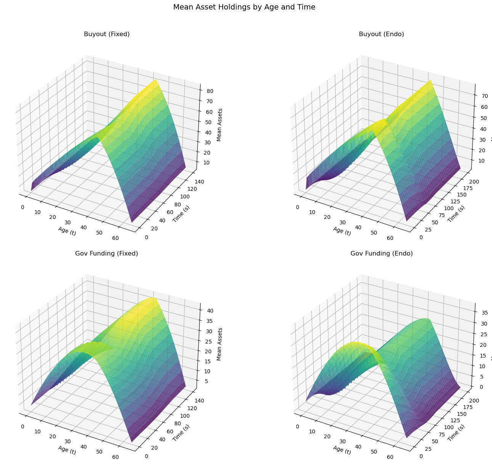
The asset variance surfaces show how cumulative income shocks cause dispersion to increase with age, with the transition potentially altering the rate of dispersion growth.
plot_surface_grid(
[Va_bf, Va_be, Va_af, Va_ae],
case_names, 'Std Dev Assets',
'Asset Std Dev by Age and Time',
cmap='plasma', transform=np.sqrt
)
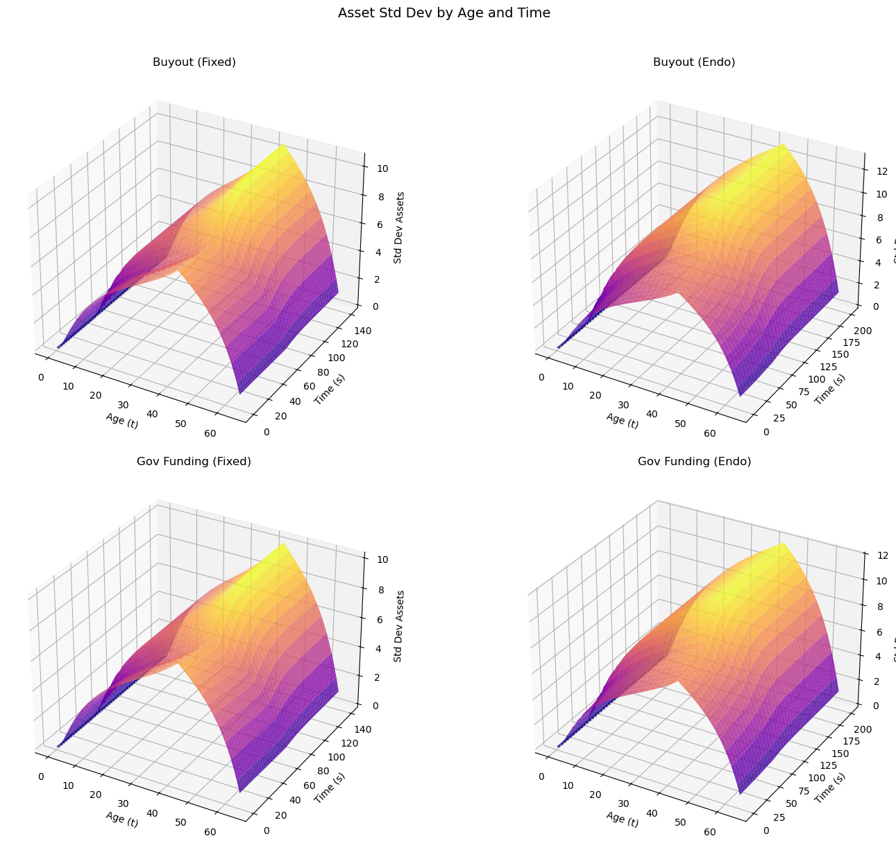
The mean consumption surfaces reflect the optimal consumption path, which should be smooth across ages due to the permanent income hypothesis underlying the model.
plot_surface_grid(
[μc_bf, μc_be, μc_af, μc_ae],
case_names, 'Mean Consumption',
'Mean Consumption by Age and Time',
cmap='coolwarm'
)
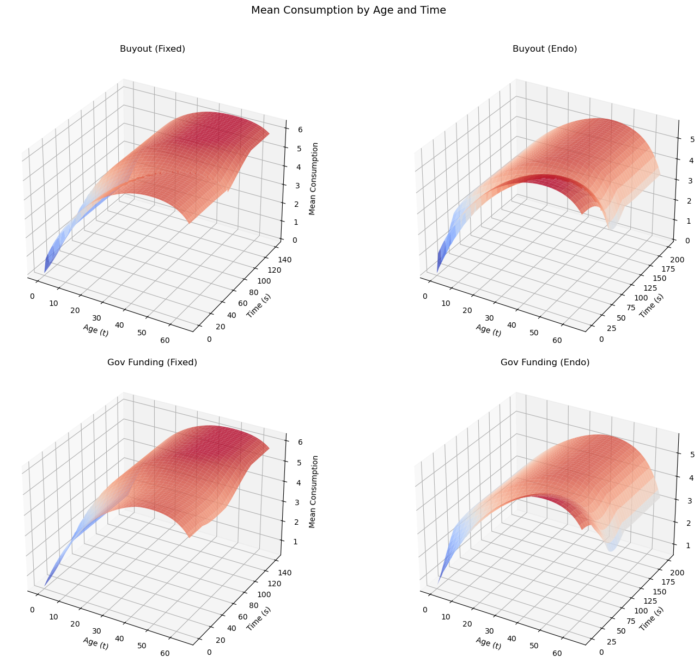
The consumption variance surfaces reveal how the certainty-equivalence property of the LQ framework shapes the within-cohort distribution of consumption over time.
plot_surface_grid(
[Vc_bf, Vc_be, Vc_af, Vc_ae],
case_names, 'Std Dev Consumption',
'Consumption Std Dev by Age and Time',
cmap='magma', transform=np.sqrt
)
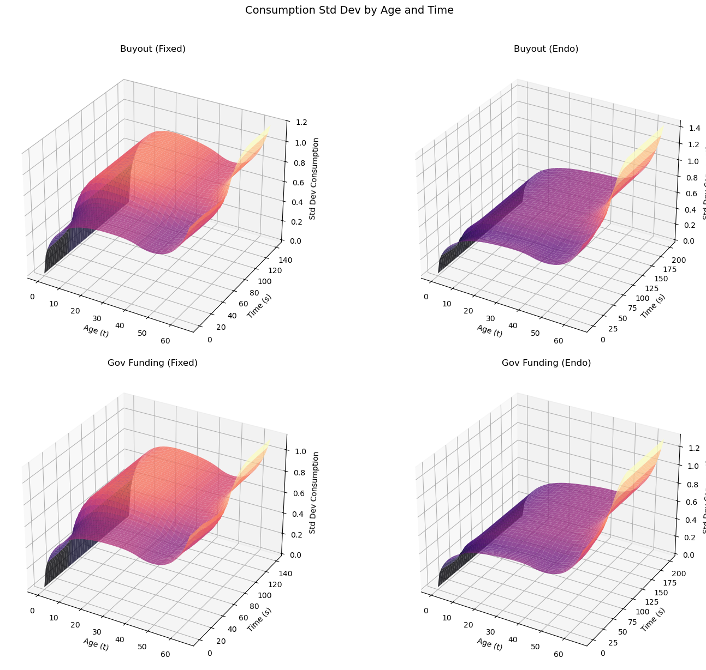